［2］（第5页）在达尔文的这本书出版以后，皮德利特仍旧还对表情这个问题继续研究下去。他特别重视艺术、绘画和雕刻方面的表情动作的研究。在这方面，可以把他看做是那个和贝尔的名字有关科学派别的后继人。皮德利特也像贝尔一样，企图创立这样一种关于表情动作的学说，而可以使它成为艺术家、演员等的直接解剖上的指导。皮德利特在自己的著作里，对达尔文在《人类和动物的表情》这本书里所提出的许多原理作了批评。皮德利特并不同意达尔文的这样一种说法，就是：在现代人类的表情和姿态方面，我们只能够看出那些表情动作的痕迹；这些表情动作过去曾经是有用的，因此以后就成为能遗传的习惯而被保存下来和加强起来。皮德利特企图证明说，不论表情或者姿态，都对现代人类方面具有一定的意义；并且说，特别是面部肌肉由于具有它们所实现的表情动作的一切多样性，就成为感觉器官的补充物，并且执行着合于目的的机能。皮德利特编制了一张表情动作表；这张表在实验心理学方面研究一种根据面部表情来认识情绪的方法时候，有相当广泛的用处。在这个派别里，曾经产生出和现在仍在产生出那些特殊的研究工作；这些研究工作的简短报道连同有关文献资料的索引，可以从下面这本书里查看到：吴伟士（R. S. Woodworth），《实验心理学》（
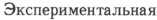
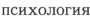
），第21章，莫斯科，1950年。［2a］从达尔文在和贝尔发生争论时候所表明的立场方面，表现出了达尔文的观点具有反目的论的性质。达尔文早已在开头提出表情动作的起源这个问题时候，就坚持了进化原理；绝不能把这个进化原理去和那些著者的见解混在一起；这些著者认为，存在着一些专门“被指定”作为表情目的用的肌肉。达尔文最坚决地反驳了这些见解。同时，达尔文在这个著作的另一些地方，亲自多次提出了一些为了斥责目的论而写的说法（还可以参看后面第37条 俄译者的附注）。
［3］达尔文不得不去和两个在表情动作的起源问题的解释上的错误方向进行斗争。一方面，他认为不可能采取贝尔关于一定的肌肉具有特殊指定的用途的见解；另一方面，他完全不满意贝尔的论敌们的见解，例如格拉希奥莱的见解，他虽然也像达尔文的一样否认肌肉为了表情的特殊目的而发展的可能性，但是没有用进化观点去考察它们。这两个方向同样是和达尔文的见解完全不同而且敌对的，因为它们并不根据于进化学说的原理。因此，达尔文面临着一个新的任务；在他以前，从来没有人提出过这个问题。丝毫用不到惊奇，达尔文在解决这个问题时候，体验到很大的困难和犹疑不决的感情。他意识到，自己掌握到极少受到科学上的检定的事实和更加少的对这些事实的生理学上的可靠说明。这一点也就说明了达尔文的这个著作所具有的特殊的叙述这个主题的方式，并且这种方式就表现在一定的事实资料的相互联系上，而时常毫无对它们的自然科学上的明确解释。
［4］根据达尔文自己的承认，他所编写成的这张问题表是不完善的。有几个重要的问题被他忽略去了；还有几个问题被他用这样的方式提出来，就是：它们会无意之中引起回答者们在没有证实这些表情动作的事实本身以前，就作出关于这些动作的性质方面的一定的判断来。达尔文并没有把他所收集到的资料作统计学上的处理，不过在分析这些资料的时候表现出了极度小心谨慎的态度。除此以外，他还把这些询问得来的资料去和他从其他来源方面所获得的知识互相比较。因此，达尔文所编的问题表虽然不完善，但是他顺利地避免了其他以这类来源为根据的著作通常所易犯的错误。
［5］达尔文所举出的这几个研究方法，被他用来查明各种情绪所特有的表情动作，并且确定这些动作和一定的生理学上的要求的联系；根据这几个方法就可以知道，达尔文为了要周到地研究这个问题而绝不错过任何一个可能有关的机会。达尔文的研究方法的优点就在于：达尔文靠了这些方法，就有可能去构想出最详细的和最全面的关于他所钻研的表情的观念来，并且极其细致地提供出关于这些表情的文字上的评定来。可是，这些方法的缺点却在于：在它们当中，任何一个方法都没有具备下面的要求，就是只要有一次科学观察在和实验方法配合的时候，就容易达到可靠性和确实性。因此，在达尔文的全部研究里，含有着不可避免的局限性的印迹；有些自然科学著作企图去说明生理学问题，同时又没有机会去进行严格的生理试验，因此也就固有着这种局限性的印迹。应当说达尔文具有一种荣幸，就是他意识到这一点，因此就企图用他所能采取的一切方法，去补足这些纯粹记述性的研究方法的空白和缺点，而且在很多情况下去把观察和最简单的实验配合起来。达尔文为了解释表情动作的起源而提出的基本原理，大概会从那种首先建立在条件反射理论的基础上的实验方面来获得强有力的支柱。
［6］达尔文在1868年1月30日寄给弗尔第南德·米勒的信还被保存着；从这封信里可以看到，在《人类和动物的表情》出版以前4年里，达尔文企图仔细说明很多有关人类和动物的特殊表情方面的细节。在上述的信里，他因为从米勒那里获得有关耸肩的姿势的资料而向米勒道谢，并且对于猿类在惊奇时刻是不是张开嘴来这一点发生怀疑。就在这封信里，他迫切地请求米勒去查明，“每只猿在作着激烈的叫喊时候，是不是都把双眼闭合起来？”（《达尔文的多方书信集》，“More Letters ，”第2卷，第98页）
［7］自从达尔文的这个著作出版以后，我们关于面部解剖方面的知识已经增长起来。在现在的解剖图上，要比达尔文当时所采取的原著里所载有的那些解剖图，含有更加详细的关于面部肌肉的知识。达尔文所写到的主要的表情肌，自然仍旧和现在所称的肌肉相同，而且它们的名称也基本上保留不变。可是，达尔文没有提出几种具有表情方面意义的肌肉。在现代的解剖学手册里，把表情肌分成下面几类：（1）颅顶肌；（2）眼缝肌；（3）鼻孔与嘴缝肌；（4）外耳道肌。
在颅顶肌当中，额肌（m. frontalis ）是表情动作方面的最重要的一种肌肉；达尔文也认为它很重要。达尔文要把这种独立的肌肉去和另一种独立的后头肌（m. occipitalis ）合并在一起，并且把它叫做occipito- frontalis （后头额肌）；现代的解剖学不再采用这个学名。在眼缝肌当中，达尔文把它分成皱眉肌（m. corrugator supercillii ）、鼻三棱肌（m. pyramidalis nasi ）和眼轮匝肌（m. orbicularis oculi ）。可是，他没有指出，眼轮匝肌分成三个部分：眼球部分（pars orbitalis ）、眼睑部分（pars palpebralis ）和泪腺部分（pars lacrimalis ）。所有这三个部分都把眼缝收缩和闭合，把额上的横皱襞牵引而使它的表面平滑，并且扩大泪囊。达尔文只提出眼睑部分的肌肉。达尔文多次谈到鼻三棱肌的机能；这种肌肉又叫做“骄傲肌”（m. procerus ）。在鼻孔与嘴缝肌这一类里，包括数量最多的肌肉。鼻肌（m. nasalis ）分成两个部分；在达尔文所借用的原著里，并没有讲到这两个部分。一个部分是鼻梁部分（pars transversa ），它把鼻孔收缩，因此也被叫做缩鼻肌（m. compressor nasi ）。鼻翼部分（pars alaris ）把鼻翼向下牵引，因此也有另一个名称——鼻翼降肌（m. depressor alae nasi ）。在达尔文的这个著作里，完全没有提到那种把鼻梁向下降落或者牵引的肌肉——鼻梁降肌（m. depressor septi nasi ）。这种肌肉在表情动作方面的意义还不明白。上唇方肌（m. quadratus labii superioris ）具有复杂的构造。它有三个头部：颧头部（caput zygomaticum ）、角头部（caput angularae ）和眼下头部（caput infraorbitalae ）。在达尔文所借用的贝尔和亨列的面部肌肉解剖图里，只表明出眼下头部。这种肌肉的机能是把上唇和鼻翼向上提起。达尔文在后面详约分析了这种机能。有一种极其重要的肌肉——大颧肌（m. zygomaticus ，或称颧肌）——也属这一类肌肉。它把嘴角向上提起和略微向外牵引。在达尔文所借用的上述的解剖图里，已经绘出大类肌来。在达尔文的这个著作里，完全没有提出下面两种也属于这一类的肌肉：犬齿肌（m. caninus ）把嘴角向上牵引；上唇门齿肌（m. incisivus labii superioris ）把嘴角向内和向上牵引。笑肌也属于这一类；它把嘴角向外牵引。达尔文在这个著作的相当地方，很详细地讲到笑肌。他也考察了口三角肌（m. triangularis oris ）；它也属于这一类肌肉，把嘴角向下牵引。达尔文在引用贝尔和亨列的著作里的面部肌肉名称时候，没有举出下面的四种肌肉来：下唇四角肌（m. quadratus labii inferioris ），也叫做下唇降肌（m. depressor labii inferioris ），它的肌束的一部分构成颈阔肌（m. platysma ）的一部分；颏肌（m. mentalis ），把下颏皮肤提起，因此也把下唇向前牵引；下唇门齿肌（m. incisivus labii inferioris ），把嘴角向下和向内牵引；颊肌（喇叭肌，m. buccinator ），把嘴角向后牵引，并且把双颊贴近双唇。还有口轮匝肌（m. orbicularis oris ）也属于这一类肌肉，它把嘴缝收缩和闭合起来，并且使双唇向前突出。在旧有的解剖图里，它被画成另外的形状。达尔文在相当地方详细考察到这种肌肉的机能。最后，达尔文完全没有提到外耳道肌的三种肌肉：上耳肌（m. auricularis superior ），把耳壳向上提起；前耳肌（m. auricularis anterior ），把耳壳向前和略微向上牵引；后耳肌（m. auricularis posterior ），把耳壳向后和略微向上牵引；他也没有确定这些肌肉在表情动作方面的意义。
除了表情肌以外，在面部肌肉里面，还有一类肌肉叫做嚼肌。这一类肌肉分成下面四种肌肉：固有嚼肌（m. masseter ），把下颚向上提起；颞肌（m. temporalis ），把下垂的下颚向上提起，并且把下颚用力贴紧上颚；外翼状肌（m. pterygoideus externus ），具有两个头部（上头部和下头部），使下颚作左右移动和向前伸出；内翼状肌（m. pterygoideus internus ），也使上下颚作左右移动和把它向上提起。一切的嚼肌都受到三叉神经（n. trigeminus ）的支配，是和受到面神经（n. facialis ）支配的表情肌不同的。显然无疑，嚼肌对表情方面起有影响，也参加表情动作。可是，不论在达尔文的这个著作里，或者在其他有关表情问题的著作里，都没有说明嚼肌在这方面的作用。
为了研究人类和动物的表情动作起见，去进行表情肌的比较解剖学的和机能的分析，也是一件极其重要的工作。达尔文并没有打算去做这项工作，所以这个问题在科学里仍旧很少被人阐明。大家只是知道，人类的表情肌由于大脑的特别分化的构造和机能而达到最大的发展。人类的表情动作，也相应要比动物的表情动作更加丰富、更加多样和分化得更加细致而且难以比拟。为了达到达尔文在这本书里替自己所规定的目的，恐怕也没有头等的必要来专门扩大关于人类表情的主题，因为达尔文首先企图去把进化原理贯彻在全书里面，并且暴露出人类和高等动物有相似的表情动作和特征的根源。可是，在达尔文的研究工作里，有一个重大的空白点，就是缺乏一种对人类和动物的表情方面的比较解剖学的和以它为根据的比较生理学分析，所以在解决达尔文在本书的最后几章（就是人类的特殊情绪和它们的外部表现的叙述占有显著地位的几章）里所考察的问题时候，他就特别尖锐地感觉到必需不仅是去确定高等动物和人类的一般特征，而且也去确定他们的特殊的特点。
［8］虽然达尔文在第一章里就开始叙述那些说明各种表情和姿态的起源的原理，但是仍旧不能认为达尔文用纯粹演绎方法来确立了这些原理。这本书的结构并不符合于研究的进程，并且初看起来，它也可能构成一种关于达尔文的科学思维方法的虚假印象来。达尔文在这本书里，也像在他的所有著作里一样，把各种不同的资料，尤其是把他的通信者们的信件里的资料，引到叙述的进程里去，但是把自己的证据建立在精密收集与选择事实资料和特别严格对待自己的分析与解释的基础上。有大批事实显现在达尔文的理智的眼光面前；他在把当中每个事实归到一定的类别里去和把它说明以前，都对它作了深思熟虑。有时实际资料阻拦了叙述，并且阻碍了概括的思想在它的分类和解释方面的明确性。应当注意，达尔文所拟定出来的三个原理，并不是一下子就在他的观念里发生出来的，而只不过是在最仔细地研究实际资料以后方才发生的。
［9］在用巴甫洛夫学说来说明的时候，恐怕就可以把有用的联合性习惯原理解释做条件反射原理。因为达尔文不是一个生理学家，所以他不可能去进行联合性习惯的形成机制的分析。可是，他用来阐明这个原理的一切例子，同样也像他同时所做的一切具体的说明那样，都证明了：根据达尔文的见解，联合性习惯是由于一定感觉和动作同时配合或者相续配合的情形经常重现的结果而形成的；由于这种结果，就形成了感觉和动作之间的牢固联系；每次就足够发生一定的感觉，以便追随相应的和它有联系的动作。达尔文在另外一些地方直接强调指出这些动作的反射作用性质。因为达尔文缺乏可以依据的生理学的理论，所以这就妨碍他去揭发联合性习惯的本质和这些习惯的形成的机制，而后来巴甫洛夫就天才地达到了这一点。可是，达尔文的思维的唯物主义方向，帮助了他采用一种接近于现代巴甫洛夫条件反射学说的说法去解释联合性习惯。
［10］达尔文多次在全部这本书里采用获得性的遗传原理，而且在这个问题上发表了一个极其接近拉马克观点的十分明确的观点。米丘林生物学坚决主张获得性可以遗传的原理；它就可以从达尔文的这个著作里取得大量例子和清楚的说法，因为达尔文在这个著作里对于这个问题的立场表现得十分明显和完备。不但这样，达尔文在这个著作里企图大体上说明获得性遗传问题的生理方面，并且小心地发表了几个有关于这个问题的假说。他推测说，那些受到一定影响的神经细胞，会发生生理上的变化，保存着这种影响的痕迹；这些痕迹在一定的条件下可以被遗传下去。这个推测也是完全符合于现代先进的巴甫洛夫生理学的见解的。达尔文不可能详细地查明在怎样的条件下和怎样的一些变化可以在神经细胞里被遗传下去；甚至在现在，还应当把这个问题进一步加深研究。达尔文无条件承认这个原理这件事，就引起了他有时偏爱把获得性遗传原理推广到几种动作方面去，这些动作并不具有一定的生物学上的意义，而且通常是教育或者模仿的产物。因此，应该有条件地去接受达尔文关于人类由于教育或者模仿而获得的姿态或怪相可以遗传的说法。总之，必须指出，在这个著作里，虽然达尔文没有引用拉马克的著作里的话，但是可以极其清楚地看出他和拉马克的见解是很接近的。
［11］在这里，不能认为，石弹在两只手指中间滚转这个例子，可以成功地说明达尔文在这种情形下所坚持的观点。在专门的研究著作里，提出了一个分析这种当石弹在两只手指中间滚转时候所发生的幻觉的方法。显然这种幻觉的发生并不是和联合性习惯有关的，也不是和练习的因素有关的。因此，不能把这个例子在这里提出来，去和跌倒时候的自卫动作或者和四肢朝着反对方向的动作并列在一起。
［12］不能认为达尔文在这里所提出的关于回想某一件事情时候眼睛固定和双眉上举的现象的说明是确实可靠的，因为回想行动的前提就在于排除次要的刺激物，并且把自身引导到集中注意的状况里去。因此，在进行回想行动时候，并不一定要同时举起眉毛和把眼光固定在空间某一点的对象上。这只不过是一种排除次要的刺激物和集中注意的特殊情形罢了。
［13］可以用所谓协同作用（
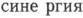
）的机制，来说明这里所叙述的同时动作的现象。尤其是它可以说明双颚依照剪刀的剪动的拍子而张合的动作。一组肌肉由于运动的协同作用的存在而发生的兴奋，伴随着其他几组和它协作的肌肉的动作而发生出来。［14］应该认为达尔文在这里值得使人敬重，因为他发表了一个对当时说来是极其勇敢的关于复杂动作具有反射性质的思想，不过伟大的俄国生理学家谢切诺夫在他的经典著作《大脑反射》里已经在达尔文的这个著作发表以前，发展了这个思想。达尔文不知道谢切诺夫的这个著作，否则他就有可能根据谢切诺夫的卓越的生理学上的论据，来使自己的一般性的说法具有更加具体的确实可靠的性质。达尔文所顺便发表的关于反射动作对于感觉和意识的关系的思想，具有极其一般的性质。
［15］按照现代以巴甫洛夫关于高级神经活动的学说为根据的观念，大脑两半球的皮质在调节着它下面的各部分的机能，并且在机体的生命活动过程里随着具体的条件而和这些部分发生各种不同的关系。在中枢神经系统的不同部分之间，发生协作的联系、相互冲突和其他各种复杂的相互作用。可是无论在什么情况下，那些在复杂的意识与意志的作用和更加简单的反射行动之间所形成的关系，总是受到牢不可破的关于皮质起有调节作用的原理的支配。在某些情形里，就是在皮质下面部分的机能不再受到皮质的调节影响的时候，就可以观察到皮质下的机能发生扰乱的现象。显然可知，达尔文在写到意识与意志的行动和反射行动之间的对抗作用时候，正就注意到了这些事实。应该理解到，在这里只可以有条件地来应用“对抗作用”（antagonism）这个名词。
［16］实际上，在惊起的力量和想象力的活跃程度之间有更加复杂的联系。有一些情形，就是：强有力的运动的解除可以被微弱的作用所引起；相反地，极其微小的运动的效应随着强烈的作用而出现。谢切诺夫早已在大脑的反射作用这个著作里，很良好地揭露出这一切情形来（参看这个著作的第一章，《强制运动》，“ ”，§5；在这一节里，专门分析“刺激力和反射动作之间的关系，就是推动力和它的效应之间的关系”的问题）。
［17］达尔文认为，有些反射动作，例如打喷嚏和咳嗽，曾经具有一种有意的性质。达尔文只是把这个观点作为假设而发表出来。在全书里面，达尔文始终没有举出过任何一个关于这方面的证据来。其实，从一般的观点看来，这个见解值得受人注意；按照一般观点，比较复杂的动作在靠了遗传方法而固定下来以后，在习惯的影响之下就逐渐地转变成为比较简单的动作。在作这样的理解时候，达尔文的观点就接近于现代对于反射动作的演化和对于条件反射可能转变成为无条件反射的先进见解。
［18］巴尔特莱特属于这样一类的人；达尔文在准备付印《人类和动物的表情》这本书以前，曾经长期和这一类人互相通信；因此他认为，从巴尔特莱特那里，获得了他所需要的有关动物在各种不同的情绪状况下的行为的知识。作为伦敦动物园主任的巴尔特莱特，曾经不仅用自己的宝贵的观察资料，而且提供可能性去制作必要的动物照片和图片的办法，来使达尔文的研究工作有利。曾经有两封达尔文在1870年和1871年间寄给巴尔特莱特的信保存下来，在这两封信里，达尔文请求他的收信人，去进行几个对于狗、马、象、狼、胡狼和其他动物由于一定的情绪状况而发生的姿态和动作。在上述的两封信当中的第一封信里，达尔文请求画家武德有便去绘几张采取一定姿态的狗的图画。他写道：“您说不定可以作这样的安排，使您那里的某一只狗在短距离处遇见一只陌生狗，并且让武德先生就在这个时刻去画出它来的吧？这时候，武德先生一定会看出这只狗的姿态和它的毛发直竖与双耳耸起的样子。此后，他一定也会画出同样的狗在向主人表示亲热、摇摆尾巴和垂下双耳的样子。”这两封信证明，达尔文在这个时期正处在紧张准备付印这个关于情绪和表情的著作的阶段（《达尔文的多方书信集》，第2卷，第101—102页）。
［19］达尔文关于微弱的意志对于随意动作和不随意动作的影响的思想，是极其值得注意的，因为这个思想使人认真地去研究关于脑皮质调节作用破坏的后果方面和关于在这个基础上发生的随意动作和不随意动作的破坏的一定的顺序方面的问题。达尔文的推测，可以从后来用巴甫洛夫学派的实验方法所获得的事实方面得到说明。
［20］把表情分成真正的和沿传的两类，可以在根本重要的问题上使人感到明显；达尔文在本书以后各章里所考察到的表情动作，有很多属于进化过程里发展起来的动作这一类；这种归属是不是正当，就要依靠于这个根本问题的解决。实际上，人类的表情动作（特别是面部表情）的多样化，在把它们和动物的表情动作比较来看，就会使我们以为，这些动作的起源具有人类所特有的根源。人类的情绪生活，首先反映出他的复杂的历史发展路线，并且取决于人类的社会本质。作为人类发展的决定性因素的劳动，也曾经决定了人类的心情的外部表现，使它们具有新的不同于动物方面所观察到的特征。达尔文善于使人极其信服地揭露和叙述这些表情的生物学基础，但是他还不能够理解到，这些表情在人类精神生活的高度发展水平的阶段上的质的特殊性。因此，达尔文就划出了特殊的一类表情动作，把这些动作叫做沿传的动作。其实，所有这些沿传的表情动作都绝不是偶现的，并且也是和真正的表情动作有一定的联系而发生和发展起来的。所有那些在艺术里（特别是在舞台上）的各种不同的体现表情动作的方法，都明显地证明这一点；这些方法在极其遥远的古代就产生出来，而且直到现在仍旧成为艺术科学里的理论研究和实际应用的对象。达尔文在自己的这个著作里，差不多没有利用到这些科学所获得的事实，而且只是提出了这些和真正表情不同的沿传的表情的存在方面的最一般的指示。在这里，讲到了十分明显的而且为生物学家认为正确的一种自我抑制（
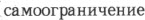
）的倾向；可是同时，这种倾向在达尔文的全部这个著作里，加上了某种片面性的印记。［21］根据达尔文在这本书的各处多次所发表的见解，这些在表情方面所使用的习惯的动作，曾经具有随意的性质，并且被故意实行过。可惜，在达尔文的这个著作和其他的著作里，他并没有进一步提出这个见解的证据来；应该把这个见解看做是假设；它极其接近于达尔文的世界观，并且含有一个对进化学说的创立人在解释习惯性表情动作（甚至不单单是表情方面的动作）的起源的问题时候最适用的原理。达尔文的这个假说，符合于现代米丘林生物学和巴甫洛夫生理学的见解；根据这些现代的见解，在发展过程里，有些条件反射，由于遗传而巩固起来和被传递到后代，它们在一定的条件下可以转变成为无条件反射（参看前面的第17条 俄译者注）。
［22］达尔文在谈到聋哑人的姿态语时候，是指手势和面部表情；这些还没有学会理解有声语言和利用语言的聋哑人，就彼此用手势和面部表情来交际。这种姿态语的训练就根据于利用聋哑人所保存着的感觉器官——视觉、触觉等器官。斯大林在答复别尔金（
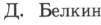
）和富列尔（С.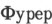
）两同志的回信里，解释了聋哑人的思维建筑在怎样的基础上面。斯大林同志写道：“聋哑人的思想之产生和能够生存，只能是根据他们日常生活中由于视觉、触觉、味觉、嗅觉而形成的对于外在世界对象及其相互关系的形象、知觉和观念。在这些形象、知觉、观念之外，思想就是空洞的，没有任何内容，就是说，它是不存在的。”（斯大林：《马克思主义与语言学问题》，人民出版社1953年版，第47页）视觉使聋哑的人能够学会用双唇读书，因此他们就能够对口语理解起来。聋哑的人就用视觉和触觉去代替他们所缺乏的听觉；起初训练他们发出单字，后来则发出词句来。因此，达尔文所写到的面部表情和手势的语言，应该被看做是那些还没有学会理解有声语言的聋哑人的极其不完善的、而且按照本身的可能性是有限的交际方式。［23］在这里，达尔文发表了一个意见；这个意见好像是和他关于习惯性表情动作起初具有随意的和有意识的性质的见解发生冲突（参看前面第17条 和第21条 俄译者注）。应当用下面的说法来说明这种外表的冲突，就是：达尔文原则上承认，有意识的动作可能在进化过程里转变成为习惯性动作，但是并不把这个原理推广到一切十足习惯性的表情动作方面去。因此，达尔文在谈到耸起双肩的时候，就着重指出，这种动作很不可能在以前有意识地和随意地发生出来。
［24］达尔文采取简短的说明，以便乘机承认自己具有关于动物的行为被有意识的动机所决定的见解（“狗用自己的动作来表明出它们的友好等是有用的”）不但这样，达尔文还讲到本能的意识，因而也强调动物具有意识的可能性。辩证唯物主义哲学就采用承认动物可能具有意识萌芽的说法去解决这个问题。斯大林同志在他的经典著作《无政府主义还是社会主义》里写道：“第一个生物是没有任何意识的，它仅仅具有感受刺激的性能和感觉的萌芽。以后动物的感觉能力渐渐发展，随着动物的有机体构造和神经系统的发展而慢慢转化为意识（《斯大林全集》，第1卷，第288页，人民出版社1953年版）。达尔文没有探查到这种从感觉向意识缓慢转化的情形，并且在有些地方硬认为动物也像人类一样，具有高度发达的意识的机能。在他的简短说明里，可以发现拟人说的观念。
［25］我们的动作时常由于鲜明地想象到自身行动或者某种物体的运动的结果而发生出来；这个事实并没有被达尔文用来和另一个事实接近在一起；另一个事实就是：一种用词来表示加强的思想的手势具有说明的作用（例如，双手好像推开别人的动作，加强一种要对方走开的口头命令）。我们可以从一种所谓观念运动作用（
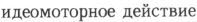
）的机制来获得前面一种事实的解释（参看第1条 俄译者注）。至于说到后面一种事实，还有和它有关的手势的起源问题，那么只可以把达尔文所提供的解释认为是一般的形式，限于承认我们的企图和我们的动作之间存在紧密的联合。［26］达尔文时代的生理学的发展情形显然还不足以说明下面的事实，就是“神经系统的强烈兴奋切断了神经力量向肌肉的经常流动”；达尔文写到这一点，并且希望找出惊起现象的生理上的说明。现在由于俄国的谢切诺夫和巴甫洛夫生理学派的经典性研究，已经查明了肌肉活动在中枢神经系统的和周围神经系统的各种兴奋状态的影响下的很多详细情节。关于神经力量向肌肉方面的流动有时加强和有时减弱的观念，在现代的见解的说明之下，就具有简化的机制的性质。神经兴奋的强化和肌肉机构的反应之间的可以观察到的似是而非的相互关系，由于应用了条件反射方法而被特别精细地研究过；而且在每个个别情况下，这些联系的机制应该获得真正具体的生理上的说明。因此，达尔文的实际叙述保存着原有的力量，但是他的解释则应该认为是陈旧的。
［27］只有到最近时候，由于巴甫洛夫生理学派的研究工作的成就，达尔文所理解的关于情绪对身体内部器官的机能的影响这个问题，方才获得了真正生理学的说明。巴甫洛夫的学生贝可夫（ ）以条件反射方法作为根据，用大批实验资料来证明了大脑皮质和内部器官的联系。达尔文正确地说明了这个问题的实际方面，但是不可能使事实获得确实的说明。达尔文认为，情绪和内部器官的联系，并不根据“有用的联合性习惯”来决定；就是说，他不承认存在着构成这种联系的基础的反射作用的机制。其实，根据贝可夫和他的学生们的研究资料，条件反射的机制正是决定着下面的现象的本质；这种现象就表现在情绪对于内部器官的影响方面，并且经常被认为是神秘的，而且成为唯物主义对于所谓“精神对肉体起有影响”的解释的根据。
［28］关于在神经细胞的兴奋影响下“神经力量解放”的原因这个问题，现在已经获得了另外的提法，并且在现代生理学支配下，有了很多宝贵的实验资料来解决这个问题。全部这个问题在生理学里完全占有特别重要的地位。由于应用了极其细致的、有关神经兴奋过程的电气现象和化学现象方面的研究方法，就对于这种力量微小的刺激物会引起狂乱行动的事实，也有了说明。
［29］在达尔文的著作里，没有说明这些在恐惧和其他情绪状态时候的出汗现象的原因；达尔文只是从事实本身的叙述为满足，却没有从当时生理学家们的著作里去探求它的满意的解释。他只是引用了生理学家们的见解；这些生理学家写到微血管里的微弱的血液循环可能对汗的分泌起有影响，并且指出血管运动系统对于脑子活动的依存关系。应当着重指出，达尔文在这种情况下正确地推测了汗的分泌和血管反应有联系，而后者又依靠调节器来决定；调节器对脑子的最高机能有关系。现在这个问题在巴甫洛夫和他的学派的研究工作里，获得了详细的说明；这个学派确立了大脑皮质对于植物性神经系统的机能的调节影响。出汗就是这些反映出恐惧时候的皮质影响的植物性反应之一。
［30］在达尔文所提出的在快乐状况下出现许多的动作这个事实的说明里，还缺少某些详细情节，只有最近的生理学才把它们查明，但是他的说明的一般原则也相符于我们现代关于这个问题的观念。达尔文善于理解情绪状态（在现在的情形里是指快乐）、血液循环过程、脑子活动和运动表现之间的相互关系的复杂性质。达尔文没有发表出一个重要的思想来，就是：大脑的皮质在所有这些不同的生理过程的复杂的相互作用里面起有调节作用。
［31］在这里所写的“以便集中自己的感觉”这句话（更加正确的说是“表示自己的感觉”），被达尔文应用在动物方面，自然是带有形而上学的意义；还有，关于动物在遇到危险时候的行为的记述具有目的论的性质，这应该归属于叙述方法的不妥当方面，而不应该认为这是达尔文对这个对象的真正见解（参看前面第2a条 俄译者注）。
［32］达尔文在讲到情绪分成兴奋和压抑的两类时候，并没有指出这是谁的分类。极可能这是指康德（Кант）所提出的当时流行的情绪分类；康德认为，可以把一切多种多样的情绪状态简略地归纳成为两类：一类是强盛的，就是兴奋的；另一类是虚弱的，就是压抑的。在精神病理学里，最牢固地坚持着这些概念；精神病学到现在仍旧有时在记述精神病患者的生活紧张度时候使用到这些概念。达尔文既不解释也不批判而采取了这种情绪分类方法，因为这种分类方法可以使他去揭露最常见的情绪的外部表现之间的性质上的差异。从科学观点看来，可以把这种情绪的划分看做是向情绪分类的第一次接近［关于这个问题，可以参看阿斯特瓦察土罗夫（ ）的著作：《情绪的体质基础和现代神经学关于情绪本质的资料》，载在《阿斯特瓦土罗夫选集》里，基洛夫工农红军军医学院出版，列宁格勒，1939年］。
［33］达尔文在这个著作里，没有说明那些处在悲哀状况下的人所表现出来的很多无秩序的狂乱动作，因为我们未必可以认为达尔文对于肌肉努力的减轻动作的指示就是一种有利于他所卫护的见解的确实证据。
［34］我们还不能认为，关于动物发出口声的能力的起源这个问题已经完全被科学所查明。可是，已经可以使人确定的是：在动物界里，口声并不是偶然发生出来的，而是随着一定适应的生物机能和器官的发展而发生出来的。因此，在达尔文假定起初口声的发出是作为胸部和喉部肌肉无目的的收缩结果而发生的时候，要是他同时没有去注意到，有些最一般的对于发声机能的发展方面的形态学的先决条件会随着另一种机能发生出来，并且和它的直接效用无关（这种效用是在以后的生活时期里由发声器官所获得的），那么这种假定就不能使人相信了。在形态和机能互相统一的基础上，也像任何一种生物学上的特征一样，发声器官的进一步的发展和完善仍旧发生出来。达尔文关于这个问题的进一步论断，证明了他正是把这种想法归到这一节的开头所发表的思想里。
［35］达尔文引证了《人类起源》第三章里的叙述；在这一章里，发展了一个见解，就是：动物的发声器官随着一定的生物学上的需要而被使用。可是，达尔文并没有对这个问题作有关人类方面的深刻分析。只有在马列主义经典作家的著作里，从恩格斯的著作《劳动在从猿到人转变过程中的作用》开始到斯大林的著作《马克思主义与语言学问题》为止，提供出了这个问题的正确解答；这就在于语言和思维在社会劳动活动过程里的发展联系的确定。斯大林在他的著作《无政府主义还是社会主义》里，提出了关于有机体的构造和它的神经系统的发展过程的极其明显的说明，并且着重指出，人类直立行走就是使用说话的必要前提（《斯大林全集》，第一卷，中译本，第288页）。
［36］达尔文所说人类的动物祖先在采用说话以前已经发出乐音来这种坚决的断语，不能被认为是根据重大的事实而来。现代对于人类的最早的类人猿祖先的说话的开头问题，还是很模糊不清，因此未必可以使人确信地谈到哪一些声音——乐音或者说话声——发生得较早，而哪一些则较慢、特别是如果去注意到“乐音”这个概念本身并不明确，那么就可以看出这种情形来。在动物当中，首先是在鸟类当中，就有发出乐音来的鲜明例子。各种动物所发出的声音，各有不同，因此也就毫无理由把它们归属于乐音这一类，正像在这个发展阶段上，乐音和非乐音的划分并没有清楚的标准。动物所发出的声音首先具有信号的意义这个事实，正证明了在动物的生物学生活里能够发生一些情况；在这些情况下，音乐的音色会显得这样有用和合于目的，正像羽毛的颜色等有用和合于目的一样。单单从这个观点看来，就已经不能不去承认达尔文的这个值得受到相当注意的假设。
［37］达尔文多次在本书的不同地方，硬认为某种动物具有意图，要使自己采取一定的样子，以便在敌方的眼睛里显出自己又巨大又可怕等。关于这些地方，应该重新提出警告，它们在这方面的解释比较不确当，好像达尔文偏向于目的论的思维方面。在达尔文讲到豪猪用中空的刺毛发出一定的声音以便警告敌方而对自己有利的时候，或者在他从同样方面解释像毛发或者皮肤附属物的直立这一类动作的用途时候，他就着重指出所有这些表情动作在生存斗争里的生物学意义。至于说到所有这些适应机能的起源，那么应该认为达尔文对这个问题的概念是唯物主义的，因为他用自己的自然选择学说去说明了这些机能（参看第2a 、3 和31条 俄译者注）。
［38］可以用条件反射机制的观点最好不过地去说明这个例子。兽医在对马或者其他动物进行第二次手术的企图，正像条件信号一样起着作用，并且引起反射；这种反射以前在治疗处理的准备手续和发疼的刺激物的影响互相配合时候占有地位。这个例子又一次说明了暂时联系的机制；它的很有教益的一点，就在于条件反射已经在条件刺激物的一次配合以后就产生出来。虽然这些情形是稀有的，但是在巴甫洛夫和他的学生们的试验里已经叙述到它们。
［39］达尔文在企图把无数关于皮肤附属物竖起方面的事实总结的时候，就得出一个十分正确的而且被最近生理学所证实的结论，就是：这种特殊的作用具有反射的性质。可是，他在以后所作的说明里面，发生了自相矛盾的情形，有时强调这种现象的起源是偶然的，有时则对它偶然发生这一点发生怀疑。这种在解决这个问题方面不明确的原因，就在于达尔文被迫满足于他当时的生理学所拥有的贫乏知识，并且不根据确证的事实的牢固基础而建立起假定来。达尔文极其接近于承认复杂的合理的动作（例如毛的竖起、皮肤附属物的竖起等）的发生和发展方面；后来，拥有条件反射理论的巴甫洛夫生理学派就确定了这种说法。依照条件反射理论，这些在感觉中枢和运动中枢之间所发生的暂时联系，可以在这样的意义上具有偶然的性质，就是：任何一种对某一种感受器起有作用的因素，可以成为条件刺激物。可是，在动物的生物学生活里，并不是一切偶然发生的联系都会固定下来和巩固下去，而是那些使动物有最良好的适应机会的联系才会这样。我们也应该从这个观点去研究达尔文所提出的问题；在达尔文的这本书里，这个问题的解决是模糊而且不明确的；因此我们要采取完全正确的基本原理，认为皮肤附属物的竖起的复杂动作具有反射性质。
［40］为了要使平滑的不随意肌在本身收缩时候和随意肌调和一致起见，用不到去假定说，不随意肌以前曾经是随意肌。达尔文因为不知道肌肉运动调和一致的生理机制，所以就作出了这个假定。我们可以认为，平滑肌和横纹肌的协应活动的起源，就在于大脑皮质和一切器官与系统发生相互作用，皮质对于这种活动起有调节作用。达尔文所遭遇到的困难，现在还没有完全消除，因为这个问题有关于进化过程，因此也有关于协应机制的长期发展路线；我们在动物的适应的习性方面就遇到这些机制。可是，采取巴甫洛夫学说的立场的进化生理学，却能够去克服这些困难，而且现在已经朝这方面取得了有效的进展。
［41］根据达尔文的观念，“皮肤附属物的直竖能力”，在大怒和恐惧所兴奋起来的神经系统的直接作用的影响下一度发展起来以后，就开始“有意识地”发展下去；这是因为动物“应该立刻时常看到，竞争的和发怒的雄性动物就把毛发或者羽毛直竖起来，而它们的身体的体积也因此增大起来”。在这个观念里，正确表明出联系的形成与巩固的机制；但是也作出了一个假定，以为这种过程具有一定的有意识的性质；这个假定不能使人认为可以无条件地接受的。
［42］达尔文在这里精彩地叙述了动物在危险情况下的行为特征和特有的表情姿态与动作；这些动作证明动物正处在警戒注意的状况里；从生理学观点看来，它们就是条件反射的变型。根据巴甫洛夫的意见，这是最重要的反射当中的一种。巴甫洛夫关于这方面写道：“可以把一种几乎不曾受到充分注意的反射，叫做探索反射（
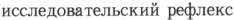
），或者照我的命名，就是‘这是什么’反射（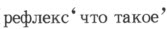
）；这也是种种基本反射之一。在周围环境发生一个极小动摇的场合，我们人类和动物都会使一个有关的感受器转到这动摇的动因方面去。这个反射的生物学意义是很巨大的。如果动物没有这种反应，那么可以说，动物的生命就时时刻刻处于千钧一发的危险境地。”（《巴甫洛夫全集》，第4卷，《大脑两半球机能讲义》，第1讲，第27页）这一段话整个适用于达尔文所叙述的动物在警戒注意状况里所特有的表情动作和姿态方面。［43］肌肉生理学从达尔文的现在这个著作出版以后，取得了巨大的进展；它证实了达尔文关于事先准备的“精神支配期间”对于肌肉的有效工作具有意义的假定，并且使这个理论上的原理运用到肌肉锻炼的实践方面去，首先是运用到体育活动方面去。现在通常所谈的肌肉的建立（指神经和肌肉的关系的建立），就是特殊的准备状况，它对肌肉活动有利，可以预防创伤性伤害；这些伤害往往是由于肌肉突然用力过度而发生的（例如肌肉在人工引起的痉挛发作时候断裂等）。
［44］在专门评论达尔文所提出的表情的三个原理的批评著作里，他的第二原理，即对立原理，曾经引起最强烈的反对。根据很多评论家的意见，很难使人相信达尔文所举出的狗的例子；这个例子说明狗在向主人表示亲切的时候，把身体伏下和弯曲起来，把尾巴摇摆着等。可是，应当注意，在达尔文看来，对立原理只不过是一组表情动作起源的可能的说明罢了；这一组表情动作，是和联合性习惯原理所能说明的表情动作发生冲突的。换句话说，这只不过是一个假设，而且也是极其小心谨慎地发表出来的。达尔文所举出的有利于对立原理方面的一切证据的缺点，就在于：达尔文不能够把生理学资料引用到自己的论据里来，正像他在第一原理方面所发生的情形一样，而在第三原理方面的情形也有几分相同。达尔文也感觉到自己的看法不大可靠，所以他在发表一切有关对立原理问题的意见的同时，并非偶然地提出了一些独特的附带条件和限制来。
［45］达尔文在这里所讲到的有关狗的恋情和用舌去舐的动作联合的一切话，从纯粹叙述的方面说来，是一个卓越的例子，说明条件反射被牢固地巩固起来，而且成为遗传的。按照达尔文在“联合”这个概念里所包含的意义，到处都是在讲到暂时联系的形成方面；这些联系在一连几世代里获得稳定的性质，并且变成表情动作的天生类型。
［46］在这里，达尔文又回叙到动物的小心谨慎的行动和那些表明出注意状况来的表情动作。如果依照巴甫洛夫学说，把动物的一切这一类动作，都看做是已经确立的反射动作，那么也就可以用生理学观点去清楚说明它们了。
［47］虽然达尔文偏爱从对立原理的观点，去说明他所叙述的猫的表情动作，但是如果采用另一个从联合性习惯原理方面推导出来的说明，那么这就会更加接近于真实的说明。在这里，达尔文对猫在发生愉快感觉时候所表现的一种表情动作（就是轮流伸出它的分开的足趾的前脚的动作），作了极其细致的分析；我们就可以从这个分析里得出上述的结论来。达尔文成功地把这种动作去和另一种具有一定的生物学意义的动作（就是挤压母猫乳房的动作）联系在一起。这就使人可能去采用联合性习惯原理去说明它，因此也就使对立原理发生动摇，要是把达尔文从对立原理的观点来说明的一切表情动作都成功地作出同样的分析，并且揭露出它们以前的个体发育上的根源，那么说不定就可以使人用不到再去注意达尔文的一切观念当中的这一个最弱的环节——假设性的对立原理。
［48］虽然达尔文在探求动物普遍具有的极其富于表情的动作（就是鼻孔扩大的动作）方面偏爱采取的说明是极其有趣味的和近于真实的，但是仍旧不能够认为已经证明鼻孔扩大的动作是专门和那些引起呼吸困难的条件联系着的，而且和嗅觉完全没有一些关系。在这里，也像在这本书的其他地方一样，显露出了这个结论的论证方法的缺点；达尔文由于不可能用严格核对过的进化生理学资料去证实自己的原理，而不得不采用了这个方法。
［49］这里值得使人注意的是：达尔文在这里提出了一个间接的、但是极其可信的关于一切人种的共同性的证据来。在这个问题上，鲜明地表明出达尔文对人类本性的观点具有进步的性质。全部被达尔文所着手进行的极其困难的、关于人类和动物的表情的研究工作的意义，首先就取决于他想要找出补充的支柱的意图，以便用那些属于进化生活的事实和这种生活所特有的表情动作，去论证进化学说。着重指出各种不同的人种的表情动作具有一般特征这件事，就是一个有利于达尔文所卫护的观念的重大论据。
［50］达尔文在列举出他在研究人类和动物的表情动作的一般待征方面所采用的方法时候，却没有提供出关于实验研究方法方面的任何一句话来。实际上，在本书里由于问题的性质不同和复杂性，而且也由于达尔文时代的生物学与生理学的研究范围狭小，所以从这个概念的严格的意义上说来，还不可能应用实验研究方法。可是，敏锐的观察力和急切要对事实作极其精确而周到叙述的企图，就引起达尔文必然有时从某种观点去提出自然条件下的“实验尝试”来；这一部分是为了要核对研究工作过程里所发生的假设，一部分则为了要获得更加精确而明显的关于某种表情动作的一切细节方面的观念。他提出了特别多的这一类对于自己孩子方面的核对试验。这里所提出的关于教唆无尾猿去进攻一只住在同笼里的使它可恨的长尾须猴的例子，就表现出了这些试验的性质。在本书各处，都散布着无数这一类例子（还可以参看第18条 俄译者注）。
［51］达尔文在这里所提出的辕，属于南美卷尾阔鼻猿一族。阿柴拉卷尾猿（Cebus Azarae ，现在叫做Aotus Azarae ）就是阿柴拉夜行猿；南美短尾猿（Callithrix sciurans ）是跳猿的一种，它的体格匀整，有杂色毛，发出巨大声音。
［52］达尔文所指出的在完全不同的情绪状态下（例如在愤怒和愉快的情绪状态下）的表情相似的事实，不应该被理解作表情动作（特别是面部表情动作）不够细微分化的证据。这个结论对于人类方面一定有特别大的错误，因为人类具有特别丰富的才能来表达出最多种多样的细微差异的情绪。这些最细微的差异，与其说是在某一组表情肌的单独的孤立的动作里显露出来，倒不如说是在几种表情动作的配合或者联合显露出来。达尔文很清楚地认为，表情的本质并不在单独的动作方面，而是在一定的“要素”的特殊配合方面。可是，达尔文就把自己的研究工作的最初阶段建立在分析方法的原则上面，而且也不害怕尽可能沿着那条进一步把各种表情动作分成它的组成“要素”的道路向前行进。因此，不应该从字面上直截了当地去解释他的关于各种不同的、有时甚至是对立的情绪的外部表现互相符合的见解。在这本书的其他地方，达尔文举出了一些在不同情绪状态下的表情外表上互相符合的卓越的例子，并且十分明显地去解释，在某种构成表情的组合里面，增添了哪一个要素，缺少了哪一个要素，什么时候它开始获得某一种情绪上的细微差异。
［52a］拉德吉娜-科特斯（ ）在她所著的《黑猩猩的孩子和人类的孩子》里，反驳达尔文对于这只在图18里所绘出的黑猩猩的面部表情的解释。拉德吉娜-科特斯曾经在一连几年里有机会去极其细致地观察了黑猩猩的表情动作（特别是面部表情）的一些细微差异，拍摄了精美的照片，并且暴露出达尔文所叙述的黑猩猩的这种撅嘴巴的表情，并不是在愤怒和不快活的状况下发生，而是在一般的兴奋状况下发生（参看拉德吉娜-科特斯的挂图集，挂图7的图1和挂图9的图1）。拉德吉娜-科特斯分析了自己的简短的记录，并且把这些记录去和她所拍摄的黑猩猩在各种不同的情绪状态下的照片作对比，于是就得出结论说，达尔文在这种情况下把一种情绪误认做另一种情绪。她写道：“甚至在达尔文这一位伟大的科学家的著作里，也把黑猩猩在表现一般兴奋状况时候的面部表情评定成愤怒、不快活的面部表情。”（拉德吉娜-科特斯，《黑猩猩的孩子和人类的孩子》，莫斯科，1935年，第34页上的附注文字）拉德吉娜-科特斯是卓越的研究猿类的专家，也是精细观察猿类表情动作的专家。因此，大家也不能不认为拉德吉娜-科特斯的观察是十分可靠的。可是，在她对达尔文的反驳里，没有充分使人相信的力量，因为用“一般的兴奋”这个概念来表达的情绪是极其复杂的状况，它也可以用愤怒、不快活等这一类情绪配合而成。达尔文所叙述的黑猩猩取走甜橙的情形，使他有理由去用愤怒和不快活的名词去评定黑猩猩的情绪。可是，也绝不可能认为，这种情绪在一般兴奋的背景上出现。因此，在这种情况下，达尔文的说明和拉德吉娜-科特斯的说明双方没有冲突。总之应该指出，一切写过表情方面的著作的专家，连达尔文在内，都具有一个缺点，就是：这些专家所用来说明各种不同的、有时极其相似的情绪状态的概念本身，并不具有足够的明确性，而他们所谈到的情绪也时常彼此被细分得不够。因此，到现在始终还对于面部肌肉的某种闪变、某些姿态等确实表现哪一种情绪这个问题，有着各种互相冲突的解释。
［53］在这种完成某一种很精确的动作时候的双唇紧闭情形，或者有些和它类似的共同动作形式（在专门著作里，这些动作总称做协同作用—— ），在各个个别情况下，依据一种成为协同作用的基础的机制而可以获得不同的说明；而这种机制则有时属于正常的生理学方面，有时则属于病理学方面。在现在所说到的情况下绝不能认为达尔文所提出的说明是唯一可能的说明，不过也可以观察到，这一类在动作和呼吸之间的联系绝不是稀有的。虽然达尔文也确定了那些在紧张而集中注意的时候所特有的面部表情和表情动作，但是他并没有谈到人类所特有的意志表现的分析，并且也没有把注意的面部表情和意志行动的面部表情联系起来。其实，在上述的情况下，虽然叙述到劳动的行动，但是大家知道，每种劳动多少有几分把这种表现在注意方面的意志动员起来（参看马克思：《资本论》，第1卷，第5章），而且这就在人类的表情里加进了一定的痕迹；人类的情绪也像人类当中的一切情形一样，是在劳动过程里和在劳动的影响之下发展起来的。除此以外，一定的肌肉群的共同紧张度在上述一种协同作用的起源方面起有一定的作用，而这些肌肉有时是极其众多，各不相同，而且甚至并不直接参加这种劳动行动或者其他的行动。
［54］达尔文在这里略微谈到的关于皱眉的表情为什么是人类所特有的这个问题，是使人感到特别有兴趣的。现在有一些资料，证明皱眉肌的收缩对于脑子的血液循环发生影响；而后者则又在某种程度上被脑子活动的特征和这种活动方面所需要的努力来决定和节制。人类不同于最高等动物的地方，就是他能够制造和使用劳动工具，并且具有一种受到劳动所制约的神经系统和首先是大脑的高度组织；因此，人类就感受到最需要去同时加强智力和体力的活动，并且去对特殊的人类活动的过程方面去集中注意力。在解决这个只有人类所特有的表情动作的问题时候，首先就应当注意到这个事实。
［55］并不容易时常使人理解到本书个别几章里的内容结构，那些引起达尔文去选择这种叙述程序（而不是其他的叙述程序）的原因，还有把个别的几种情绪合并成一组的原则。尤其是难以理解到为什么把吃惊和恐怖两种情绪合并在一起。显然达尔文所持有的出发点就是：在绝大数量的情形里，动物所发生的吃惊，是由于那种含有危险的对象所激发起来的。在这方面显然无疑含有大部分的真理，但是在这里还应该添加附带条件。根据巴甫洛夫学说，在动物遇到任何一种刺激物的时候，它的探索反射和“这是什么”反射就发生和发展起来；这种刺激物迫使动物去辨认它当前的新的情况，并且作出新的暂时联系（条件反射），以便最良好地适应环境。甚至是对于动物方面，这些刺激物也不一定要包含威吓和危险。至于说到人类，那么他的吃惊和恐怖之间的联系就更加遥远。
［56］杜庆所进行的试验，后来被达尔文一部分重复进行，一部分则在略加修改以后进行；这些试验具有某些方法上的误差。这种误差的发生原因就在于：如果我们要求有些被试者找出口头上的用语来确切说明相片上所表示的面部表情，那么他们绝不是时常能够找出最适当的名称，来表达他们所理解到的情绪。如果进行一系列的初步试验，而且还设立一些对照试验，那么也可能避免这种误差的来源。达尔文极可能考虑到这种情况，因此也在他每次利用杜庆所拍摄的照片和其他照片时候，总是去把一类可靠的回答去和所有多少接近于真实的回答结合在一起。这就使达尔文去统计可靠和不可靠的回答的次数，因此可以去确定有多少相片上所表示的面部表情真正符合于一定的情绪。显然可以明白，这种相当粗略的经验方法不可能使人用来研究细微的情绪差异，因此也不适宜于研究那些虽然彼此相近、但是仍旧并不相同的情绪在表现上的差异。
［57］在达尔文的这本书出版以后，已经积累了很多关于精神病患者的情绪和这些情绪的外部表现这个问题的临床治疗资料。著名的俄国精神病学家奥西坡夫（ ）收集到了特别多的关于这个问题的资料；他不仅把丰富的事实整理成一个体系，而且还使它们得到新的、根据巴甫洛夫高级神经活动学说而来的说明（参看奥西坡夫：《普通精神病学教程》，“
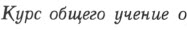
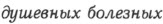
”，1923年）。有很多临床治疗资料，证实了达尔文在研究表情动作的起源时候所利用的唯一的观察结果。可是，同时也正是达尔文的这本书里所讲到的这些地方，特别需要加以说明和修正，因为依照巴甫洛夫学说的看法，去研究精神病患者的情绪生活这件事情，可以使人从另外的角度去观察很多有关正常心理和病态心理方面的现象（参看《巴甫洛夫全集》，第2卷和第3卷，莫斯科，1949年和1947年；又参看伊凡诺夫-斯莫林斯基：《高级神经活动病理生理学概要》——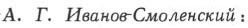
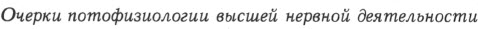
，莫斯科，1949）。特别是达尔文所写的一切关于精神病患者的流泪的叙述，只有在最一般的外形上是可靠的，因为在各种不同的疾病和精神病状况下，眼泪发生的来源并不相同，而且用不同的方式向外表现出来。这种情形首先属于下面的精神病，就是：压抑型癫狂症精神病、歇斯底里病和大脑动脉硬化症；这些精神病的特征就是流泪；它们的发生机制和情绪意义各有不同。达尔文没有把这些状况细分开来；在他的这本书里也没有讲明相应的表情动作的细微处（参看第67条 俄译者注）。［58］在《人类和动物的表情》这本书出版以前的几年里，达尔文曾经和一位很著名的医生巴乌孟（Bowman）通信。在达尔文的书信遗产里，还保存着一封在1858年3月30日写给巴乌孟的信；全部这封信的内容专门是讲明眼睛周围的肌肉收缩和眼泪分泌之间的联系。显然这并不是达尔文写给巴乌孟的第一封信，因为这封信的开头写着下面几句话：“您完全没有理解到我关于贝尔原理的问题，就是：如果婴孩在哭泣时候把双眼睁开来，那么在某一时刻，血液就充满在他的结膜（conjunetiva）里。我把您的短信保存起来；您在它里面对于贝尔的这个说法的正确性表示怀疑”。达尔文请求巴乌孟在眼科医院里进行专门性的观察，或者转托另外的人去做这件事情。达尔文在这封信里详细地讲述到他自己对几个动物园里的象的观察结果。从这封信里可以知道，达尔文不单单收集偶然发生的、对表情有关的事实，而且对他说来，这个大问题的十分具体的部分已经被决定，并且将来研究工作的规模显然也已经相当明确地被拟定好了。
［59］达尔文由于巴乌孟的介绍，有机会去阅读唐得尔斯的研究工作，尤其是去阅读他批评查理士·贝尔的见解的著作；此后在1870年里，达尔文就和唐得尔斯互相通信。达尔文在1870年7月3日写给唐得尔斯的一封现在还保存着的信里，谈到自己对于双眼由于一定的情绪状态而充血和眼泪分泌的观察。达尔文写道：“当我把呕吐、咳嗽、打呵欠和大笑等时候所发生的眼轮匝肌收缩和同时分泌眼泪这些事实来作比较的时候，我开始认为，在这些现象之间存在着一定的联系，但是您清楚地使我理解到，这种联系直到现在仍旧是模糊不明的。”达尔文对于唐得尔斯所报道给他的观察发生兴趣；这个观察就是：在触动眼睛的时候，有时这就会引起眼轮匝肌长达1小时的抽筋，同时还流出眼泪来；在达尔文的这个著作里，对唐得尔斯所寄送给他的有关眼轮匝肌的收缩和眼泪分泌之间的生理学上和解剖学上的相互关系的概述，作了极高的赞评。因此从这封信里，还有从其他几封写给唐得尔斯的信里，就可以看出，达尔文多么深刻地认识了他所感兴趣的流泪现象在各种不同的情绪时候的机制，还有他多么顽强而且细心地研究了这方面的事实，并且企图从头等的专家们的手里来取得这些事实（参看《达尔文的多方书信集》，第2卷，第100—101页）。
［60］血管（连眼睛的血管也包括在内）的反应的生理机制，还有这些反应和那些在各种情绪状态下极其强烈地用各种各样方式紧张起来的呼吸机能，都是和大脑两半球的皮质的活动有最密切的关系。达尔文有些片面地去理解眼睛和脑子的这种联系；如果我们注意到19世纪60—70年代的大多数生理学家对于大脑的机能、植物性神经系统和调节血管反应的机制的观念还是相当贫乏而且时常变化不定，那么也就可以完全理解到这种情形了。现在由于有了巴甫洛夫和他的学派的研究工作，已经查明了大脑皮质对于植物性神经系统方面起有调节作用。在强烈感受到情绪性质的时候，皮质的这种调节作用就以不同的方式表现出来。应该从这方面去找到达尔文所充分叙述到的各种情绪的外部表现的制止事实的说明。如果这些情绪的外部表现没有被抑制下去，而在表情肌和其他肌肉的动作方面、在血管反应方面等找到出路，那么在这些情况下，大脑皮质就和它的下面部分，发生复杂的相互作用的关系，并且在每个具体情况里，这些关系就由于很多也能决定情绪出现的条件而以各种不同的方式形成起来。
［61］这是协同作用的例子的一种；达尔文曾经多次叙述到这些协同作用；虽然他充分而且使人可信地收集了和整理了有关这方面的事实，但是他并不能同样充分而且使人可信地去揭发它们的本质。在现在这个情形里，达尔文实际上仍旧没有说明搔痒和眼睑紧闭的共同动作的现象。他所发表的关于肌肉努力可能传布到全身的几乎一切肌肉方面的假定，是近于真实的，因为有一种情形已经被证实，就是：有一种时常可以被观察到的协同作用，是和兴奋的放散与最不相同的肌肉群被吸引到肌肉活动方面去的机制有联系的。我们仍旧应该承认说，达尔文顺便发表了这个假定，并没有用多少使人可信的论据去证实它。
［62］这里所举出的天然实验的叙述，是达尔文为了下面的目的而提出来的；这个目的就是要去确定眼睛周围肌肉收缩与眼泪分泌的现象，一方面和高声叫喊之间，另一方面显然是和某种注意力和惊人的观察力之间，可能发生联系；从这个叙述里，达尔文仔细察看了表情动作的最细微的特征，同时看出那种好像不能用肉眼来感觉到的情形，例如上眼轮匝肌和下眼轮匝肌的收缩程度的细微差异。这也就使达尔文做到了其他科学家必须用专门仪器、照相机等才能办到的事情。
［63］直到现在为止，达尔文所理解的关于眼泪在一定情绪下流出和分泌的原因这个问题，还不能被认为已经解决。在专门著作里，可以遇到下面的指示，就是：通过那些直到现在还没有确定的特殊中枢会发生出精神上的哭泣；这些中枢的兴奋被传送到泪腺上面的大部分里，这个部分被有些专家看做是独立的腺，所以它又被叫做眼窝泪腺（gl. lacrim，orbitalis ）。按照这种见解，泪腺的下面部分也具有独立的意义，并且被叫做指状泪腺（gl. lacrim，palpebralis ）；它好像对反射性质的刺激发生反应，并且引起完全和情绪没有联系的眼泪分泌。应当认为达尔文的观点比较进步，因为他以为“精神上的哭泣”和反射性哭泣之间没有原则上的差异，同时着重指出它们的起源相同，而且反射机制就是它们的基础。不但这样，达尔文还企图去说明：眼泪分泌反射起初是由于异物或者有时由于病原体而发生的，作为生物学上必需对于眼睛刺激的反响，可是怎样会像我们马上要讲到的那样，也能够被另一种条件反射方法激发起来。达尔文的解释极其接近于现代巴甫洛夫法则的观点；这种法则在支配着新的暂时联系的形成和它们在进化过程里和在一定条件下向无条件反射转化的过程。达尔文所发表的关于神经力量比较容易沿着惯熟的通路传布这个见解，是特别重要的。达尔文所称的习惯与联合原理，如果被转译成为现代说法，那么正像前面已经解释过的，就是条件反射的形成法则（ ）；达尔文只不过预感到联合的生理上的性质，但是没有完全明白这种性质。只有天才的巴甫洛夫学说，方才帮助我们现在真正去理解达尔文在沿着唯物主义进化生理学路线摸索而行时候所发生的很多思想。
［64］达尔文企图去说明，写什么这种随着年龄而养成起来的、能够抑制哭喊或者哭泣的习惯，并不消除微弱冲动在相应的情绪激发物存在时候出现的可能性；这些冲动朝着那些受到抑制的眼睛周围的肌肉前进，并且引起这些肌肉发生轻度痉挛，而代替它们以前在这些情况下所发生的激烈的收缩；同时，达尔文认真地研究了暂时联系消失的规律性问题。达尔文正确地看出，变弱的冲动主要是朝着那些肌肉方面前进，这些肌肉最少受到意志的支配。达尔文的功劳就在于：他注意到了这个事实，正确叙述了它，并且企图使它获得生理上的解释；这种解释显得极其接近于我们的以巴甫洛夫关于暂时联系形成与消失的学说为基础的现代观念。
［65］依照现代的解剖学资料，皱眉肌（也叫做m. corrugator supercilli ）执行着一定的机能，就是：把双眉牵引到中线处去，因此也就引起鼻梁以上的皮肤的纵沟纹出现。杜庆的意见以为，这种肌肉还把双眉的内端向上提起；这个意见并不符合于实际情况。我们仍旧应该指出，在人类面部的复杂的表情动作方面，很多肌肉同时共同参加行动，很奇妙地随着它们所表现的情绪感受的细致差异而配合起来；未必可以把杜庆的同样试验所确信的情形——把表情简化成某一种肌肉的动作的情形——认为是可能的（参看沃罗比耶夫：《人体解剖图》，第2卷，第100页和以后）。
［66］虽然绝不是所有肌肉协同作用的情况都暂时有了科学上的说明，但是可以认为已经确定的是：与其说解剖学上的彼此相邻情形，或者神经支配机制同时发生作用，倒不如说生活需要所制约着的共同机能的出现次数，成为习惯性共同动作的形成的决定性因素。达尔文正确地采取进化学说的方法去找寻这些问题的回答，因为只有在查明了那些参加同一行动的肌肉的某一种在工作里形成起来的配合的起源史和生物学上的意义以后，方才可以理解到怎样的法则成为协同作用的具体类型的基础。人类的劳动活动连同无数在这方面所遇见的协同作用，使上述的情况获得间接的、但是极其可信的证据；这些协同作用，有时被引导到经久的动力定型（巴甫洛夫的用语），有时则极其变化不定。
［67］在达尔文的这本书出版以后，大家对于研究精神病患者的注意力就提高起来；有些心理学家和精神病学家就对这个问题作了专门研究。在一切有关精神病理学和精神病学的近于基础的手册里，都把各种精神病患者的表情和表情动作的叙述列在特别重要的地位。在这些著作里，照例都是纯粹叙述性的鉴定占有了对分析的优势，而且也差不多没有谈到达尔文所最关心的表情动作的起源问题。因此，大家仍旧没有去注意到为什么精神病患者的表情和表情动作是很突出的这个问题；即使有人提出这个问题，那么也总是时常采取返祖遗传、退化和其他毫无科学意义的、反动的捏造的观点，作出错误的解释来。实际上，精神病患者的表情动作的特点，特别是面部表情的特点，就在于一定的情绪状态变得尖锐化或者迟钝化，这是和大脑的病理过程联系起来的。一个人在正常时候用并不激烈的程度来表达的表情，到病态时候往往就采取突出的鲜明的特色，但是有时也相反地隐失不见了。可是，绝不会发生回复到类似动物的状况或者重现那些好像长期隐藏在人体某处的兽性这类情形。不但这样，在精神病患者的表情里，有时还出现一些按照本身表现力说来是极度人类性的特色。例如在作家加尔申（ ）的作品里就描写到这种情形。俄国神经病理学家米诺尔（
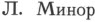
）发表了一篇论文，专门讨论各种神经病和精神病的患者的面部表情（参看米诺尔：《论神经病和精神病患者的面相的变化》， ，《哲学与心理学问题杂志》，1893年，第17期）。又可以参看第57条 俄译者注。［68］应该承认，达尔文关于双眉在苦恼时候倾斜的原因方面的见解和关于额肌的中央筋膜对于鼻三棱肌和眼睛周围的其他肌肉起有抑制作用的见解，是极其精确和极其确实可信的。在达尔文的这本书里，用很多亲身的观察和特殊的实验来证实额肌的对抗性收缩的意见；他时常把自己的孩子作为这方面的观察对象。在这里，达尔文又回头讲到一个对他的全部观念很重要的见解，就是：已经获得的那些抑制或者制止一定动作的习惯可能遗传传递下去；如果不承认这一点，那么也就很难使人去说明很多表情动作。可是，从现代的观点看来，达尔文所提出的关于可能培养那种对抗一定的、看上去好像不能克服的动作的习惯这个原理，是特别重要的；例如，在悲哀的时候，就会发生这些动作；根据达尔文的说法，在这时候“由于长期的习惯，我们的脑子就有倾向要发布一种使某些肌肉收缩的命令，好像我们仍旧还是一个正要尖叫起来的婴孩似的”。
［69］达尔文在现在这本书里有几次引用赫伯特。斯宾塞的话；斯宾塞除了发表这里的附注里所提到的《笑的生理学》以外，还发表了一篇短文，叫做《哭和笑的理论》（
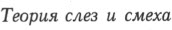
，参看鲁巴庚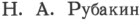
主编的《赫伯特·斯宾塞著作集》，圣彼得堡，1899年，论文部分，第154—157页）。斯宾塞在这篇文章里证明说，笑和哭的原因是相同的，正就是由于脑子的血液循环加速而发生。“当那些把血液输送到脑子里去的动脉由于愉快的精神兴奋而扩大起来的时候，结果就引起笑来；可是，当这些动脉由于悲痛的精神兴奋而显著扩大的时候，结果就引起哭来；如果这些动脉由于前面或者后面的原因而扩大的程度达到极点，那么我们就会看到同时发生大哭和大笑的情形”。从这本书的以后的部分里可以看到，显然达尔文也像斯宾塞一样，倾向于笑和哭互相接近的见解，而且指出它们的起源彼此相同和生理机制互相一致；可是，由于明显的原因，达尔文就把自己的主要的注意力针对这些情绪所特有的表情动作方面。［70］在这里，达尔文对于那些（作为大颧肌在愉快情绪影响下发生收缩的间接证明的）有关进行性麻痹的患者所特有的表情方面的事实，特别是关于这些患者的下眼睑肌肉和大额肌发生经常性震颤的事实，发生兴趣；可是，我们绝不可以认为他在这里所写的意见就是他的基本思想的适当发展，因为这种病症按照它对于全部神经系统和大脑的最高部分的影响看来，是具有过度的破坏性的。绝不能认为进行性麻痹的患者也像健康人那样，具有相同的乐观主义情绪或者快乐的精神状态，因为在这些患者的全部精神生活里，都显示出大批病理变化的印迹，并且笼罩着狂乱的心情，而后者就把一切事物（连情绪的表现在内，尤其是它们的外部表现）都歪曲起来；同时还发生一定的肌肉收缩或者痉挛等情形。
［71］显然无疑，一般的兴奋状态和那些件随它一同发生的血液循环的变化，会对于歇斯底里反应的外部表现方面起有一定的作用。可是，在巴甫洛夫以前，从来还没有人搞清楚歇斯底里的病理生理；原来歇斯底里病是由于神经系统衰弱和脑子皮质的活动受到强烈抑制而发生的；结果，因为不能对抗那些皮质所承受不住的刺激物的作用，所以这就引起激情的爆发和痉挛的发作来。由于制止作用向皮质和皮质下区域传布，歇斯底里发作也就采取不同的外部表现；从哭向笑和从笑向哭的转变，只不过是一种歇斯底里发作时候由于皮质和皮质下等的强烈的相互关系，而形成起来的刺激过程和制止过程在皮质里的相互关系的局部表现罢了（参看《巴甫洛夫全集》，第3卷，1949年《歇斯底里症状的生理学理解的尝试》，
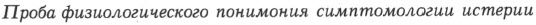
）。［72］虽然达尔文很仔细地做了他对于小孩们的观察，但是这些观察质料仍旧还不是按照每天经常不断的观察而得来的，因此在它们里面就难免会发生不正确的地方。最近对于小孩的观察工作，是从他们出生的日子开始，以一切必要的完备性和精密度，应用照相机和有时应用电影拍摄机来进行的；同时不仅是每天，而且是每小时都接连进行这些观察。现在科学已经拥有了大量实际资料；这些资料的可靠性是由可靠的文件来保证的。从这些资料方面看来，达尔文的个别记录，在那个属于他所看出的小孩的表情动作的部分方面，并没有丧失重要性，但是在他所讲到的关于个别表情或者其他的动作的表现期间和顺序方面，却需要作一些修正。特别是在专门著作里，可以阅读到一些指示，说明一足月的婴孩的面部表现微笑，或者更加确切的说是类似微笑的表情，而且在出生以后41天的时候出现十分明显的微笑。可以观察到婴孩在很早时候就把嘴张大，但是这种动作并不是笑，而是开头的呼吸适应。微笑的起源这个问题，到现在仍旧和达尔文写这本书的时代一样，还没有得到解决。
［73］在这本书里，达尔文时常使用一个名词mind；这个名词相当于俄文的
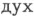
，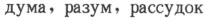
（中文译名采用“精神”）。达尔文在讲到“精神”、“精神活动”等的时候，绝没有把唯心主义的意义加到这些概念里去，而是把它们解释成那些具有复杂组织的神经系统的动物所特有的、而且从一定的物质基础上发生的心理机能的总体。［74］达尔文在这里说明了音乐对我们的感觉发生惊人的影响，尤其是说明了很多人在听到特别使人感动的音乐时候、发生一种沿着背脊向下的颤动和轻微发抖的现象；应该承认，他在这方面的说明，极其接近于现代的说明，就是从新联系形成的条件反射机制的观念里推导出来的说明，而且这种说明也可以被应用到一定的情绪和有些初看起来好像与它没有关系的肌肉动作或者营养反应（
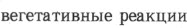
）的联合方面去。应该注意到，这一类反应（震颤、颤动、发抖等）并不是单单音乐的感受方面所专有的；在某一本书、戏剧、演说家的演说等的个别情节的影响所引起的其他情绪下，也能够发生出这些反应来。［75］在这个对崇拜感情所特有的表情动作的分析的例子里，容易看出，多少有些不合常理地把这些在性质上和在起源上多么不同的情绪状态放置在一个行列里来考虑，就是：一方面是恐怖、恐惧、大怒等，另一方面是爱情、崇拜等。达尔文理解到这些差异，因此也就提出要把表情动作划分成为真正的和沿传的两种，但是并没有明确说明这个分类的基础。为了叙述得有顺序起见，达尔文应当开头先去考察情绪，叙述它们的各种不同的（从它们的发展史的观点来看的）表现，然后再去说明它们的发生上的根源。可是，我们在达尔文的这本书里，却看不到这种顺序。他在这个问题方面的立场，是两面性的和矛盾的。这两面性就表现在：达尔文在预先警告读者必须把真正的表情和沿传的表情划分开来以后，却没有专门去进行真正的表情的分析工作，反而走到一边去，并且专门去考察那些表情动作，而这些动作的起源很难从他的进化原理方面被推断出来，因为它们的发生和发展是和人类的社会活动和劳动活动联系在一起的，就是主要和社会历史因素联系在一起的。崇拜等感情所特有的表情，正好也是属于这一类的。立场的矛盾则表现在：达尔文没有成功地彻底坚持严整的、逻辑上没有缺点的判断路线，而且他没有相当的科学根据，却把那些原理推广到明确的一类表情动作方面去；根据他自己所说的话，这些原理并不应该被应用到这类表情动作方面去。从哲学方面看来，达尔文所犯的错误就在于：他把一些现象生物学化，而这些现象的基础却是社会的因素；应该先注意到人类社会的发展法则，然后才可以理解到这些现象（参看第20条 俄译者注）。
［76］一个人在反对某种建议时候把双眼闭住的动作，可以被说明是由于条件反射而发生；这种条件反射是由于多次对于下面两种刺激物的反应的配合结果而形成起来；一种是对眼睛有危害性的刺激物，另一种是含有某种不愉快事情的刺激物。从这个观点，也就可以使人理解到另一些表情动作，例如双眉在希望回想到某一种事情时候向上举起的动作。
［77］现代生理学已经详细研究了身体在肌肉紧张时候所发生的过程，并且确定，不论呼吸或者血液循环，都是依存于肌肉努力的性质、肌肉的活动情况、肌肉的轮流收缩和宽弛的次数，而且首先是依存于肌肉的动作究竟具有静态的性质还是动态的性质。在肌肉作动态上的努力时候，肌肉的血液循环就加速起来；而在肌肉作静态上的努力时候，就观察不到血液循环的变化，因为小静脉的柔韧的管壁受到紧压，所以使血管沿着它们的流动受到妨碍。有时这种情形就会引起血液郁积在紧张的肌肉里的现象。在强烈的静态的努力时候，同样也往往会发生肺活量减少的情形，而呼吸次数则变得稀少，有时呼吸变得微弱起来。这种情况对于长期静态紧张的人是特征性的。因此，达尔文所举出的叙述，基本上符合于现代生理学的观念，但是它只属一定的肌肉努力一类。在达尔文的这本书里，对这种状况所特有的面部表情作了正确的生理上的说明，不过达尔文的简短说明带有目的论的色彩，就是：“我们把嘴闭住，以便使血液循环受到阻碍。”
［78］在达尔文的这本书《人类和动物的表情》出版以后，关于情绪和它们的外部表现之间的关系这个问题，就成为专门著作方面的活跃的讨论题目。达尔文是把这个问题联系着进化论而提出来的，可是，很多以后的研究家却不去朝着这个大有成果的方向进行研究，反而主要采取内部或者外部的情绪作为首位的观点，去考察这个题目。达尔文以为，“如果身体保持被动的状态，那么这些情绪就很难存在下去”；依照达尔文的全部概念的意义看来，应该把他这个见解看做是情绪和它们的外部表现互相统一的肯定说法。可是，在詹姆士-朗格（James-Lange）的唯心主义的情绪理论里，却把这个见解引导到极度夸大和歪曲的程度；他们两人曲解了精神和肉体之间的实际关系，并且硬认为具体的表情就是引起情绪本身的原因的作用。
［79］达尔文在这里犯了一个严重的错误；他不加批判地转述了那些赞成反动的唯心主义的概念的神经学家和生理学家们的见解；这个反动的概念就是：在人体里存在着古代的、远古的“兽性的要素”；这种“要素”好像被外表的不坚固的一层高等人类的性质所掩蔽着；如果一个人由于处在患病状态里或者在短期兴奋的影响之下失却了控制自己的能力，让“原始的”感情和嗜好来支配自己，那么这种“要素”就会向外突破出来。即使到现在，反动的科学家们还是在拥护这种观点；他们企图用虚假的关于皮质下机制支配人的行为的论断去论证这个观点。巴甫洛夫的卓越的研究工作，已经搞明白了皮质和皮质下的相互关系这个问题，并且揭穿了所有这一切虚假的关于那些好像在虚弱的意识里很难含有的原始兽性的嗜好具有威力的“理论”。巴甫洛夫的研究工作证明了大脑两半球的皮质在调节人体的一切动作方面起有决定性作用；不论正常的或者病态的人体都是一样。至于说到某些在皮质和皮质下之间的正常相互关系被破坏的情形方面，那么巴甫洛夫完全没有采取那些幼稚而且发生重大错误的观念；这些观念以为，皮质下好像是人体里的“兽性的要素”的负荷者，而这种“要素”会突破皮质的支配而显露出来。巴甫洛夫认为，皮质下只不过是“有机体和周围环境的相互关系方面的第一阶段”（《巴甫洛夫全集》，第3卷，第482页）。巴甫洛夫写道：“大脑两半球的皮质对于皮质下方面所起的作用，就在于把所有外来的和内部的刺激作细致而又广泛的分析和综合，就是说，这是为了皮质下而进行的，并且要经常去改正皮质下神经结节的呆滞状态。皮质好像在皮质下神经中枢所进行的一般粗浅的活动背景上，刺绣出更加精致的动作的花样来；这些动作就保证最充分地符合于动物的生活情况。皮质下则反过来对大脑两半球的皮质起有确实的影响，并且表现成为它们的力量的来源”（巴甫洛夫：《论高级神经活动生理学和病理学》，真理出版社，1949年，第18—19页）。
［80］这一段文字里所提出的美奇斯人（Mechis）和列普查人（Lephas），是两个居住在印度东北部的种族。
［81］达尔文的这个判断，接近于他在前面已经发表的另一个关于人体里含有古代兽性的要素的见解（参看第79条 俄译者注），并且证明达尔文在这些问题方面也同样发生了重大的错误。动物性的表情好像在未开化的人方面要比在文明人方面更加经常地出现，这就是侵略的殖民主义者们所制造的谎话之一；这些殖民主义者们就用那些在未开化的人们中间传布文化的“善良的”动机来掩饰自己的掠夺的勾当。只要去阅读米克鲁霍-马克莱的作品里关于未开化种族和半开化种族的生活的叙述，就已经足够去相信，反动者们、种族主义的假科学家们所传布的关于未开化的人好像具有“天生的”残忍性的报道，是多么荒谬。
［82］奥格耳是那些和达尔文发生通信关系并且讨论很多问题、尤其是表情问题方面的亲密的科学家之一。达尔文对于奥格耳观察一个因杀人罪而被捕的犯人时候所处的最细微的情况，发生极大的兴趣。达尔文在接到了奥格耳的第一封叙述这个事件的信以后，就亲自做了一个简短的备考；在这个备考里面，用明确的顺序来列举出杀人犯所发生的恐怖感情的外表特征。达尔文在写给奥格耳的信（1871年3月7日所写）里，就把这个备考里所列举的内容抄写在信里，并且请求奥格耳回信告诉，他在这里是不是也像奥格耳实际观察到的情形一样，正确地转述了恐惧和恐怖的一切表征。达尔文在和奥格耳博士的通信里所讨论到的基本问题，牵涉惊奇情绪与紧张注意状态所引起的呼吸和听觉之间的关系（1871年3月12日所写的信）。达尔文把自己对于一定肌肉（特别是颈阔肌）在恐怖情绪发生时候的收缩的观察告诉奥格耳。他甚至还请求奥格耳亲身去做几个试验，去设想他突然当面碰见某种可怕的东西并且恐怖得发抖起来的情形。达尔文并不打算使这位收信人发生一定的意见，因此写道：“请原谅，请您尝试去做这件事情一次或者两次，同时仔细地去观察自己当时所发生的行动。只有在做了这种观察以后，才请您再阅读我这封信的下面所写的内容。使我感到惊奇的是，每次在我去干这件事情的时候，我注意到，我自己的颈阔肌在发生收缩”（1871年3月25日所写的信）。达尔文对奥格耳的关于嗅觉方面的著作，作了高度的评价。这些信特别明显地使大家相信：达尔文在准备出版这本《人类和动物的表情》的时候，曾经作了大量的初步研究工作（参看《达尔文的生平和书信集》，第3卷，第141、142和143页；又参看《达尔文的多方书信集》，第2卷，第102—108页）。
［83］这个关于呕吐是反射动作的例子，再好也没有地说明了这种反射和任何一种刺激物（连一种对于厌恶的食物或者气味的想法也在内）的条件性暂时联系可能形成的原因。可是，干呕或者真正呕吐的条件反射性质，绝不是意味着这些反射动作应该在条件刺激物的作用下，也像在无条件刺激物的作用下一样，必定延长了时间发生。从条件反射活动法则的观点，我们就可以完全说明下面一个事实，就是：在单单一种对于厌恶的食物的想法影响之下，差不多在一刹那间就会发生呕吐动作。在这里，用不到采用那个关于我们人类的祖先具有一种随意吐出胃里的食物的能力的假定，去说明这个事实。因此，达尔文对于这个问题的全部判断，就不能使人认为是可靠的。
［84］在现在的情形里，谈到了两种不同的情绪或者精神状态，就是顽固和顺从；关于这两种情绪往往具有极其相似的外部表现这个事实，应该会使达尔文去考虑到和企图找寻出它的合理说明。可是，达尔文在寻求这种说明的时候，却脱离开了真正科学的分析方法，反而去作出那些没有证明力量的纯粹思辨性的说法来。达尔文硬认为有些情绪所特有的手势和姿态（耸肩），缺乏一种积极反抗的思想。一看就可以明白这种说明是牵强附会和随意作出的。达尔文在这里所犯的错误的来源，就在于：在现在的情形里，也像在很多其他情形里一样，他把那些真正反映出一定情绪和它们的外部表现之间的联系来的规律，不恰当地搬用到人类的一些复杂的、具有质的特殊性的精神状态方面来，而这些精神状态则是由人类的特殊生活的历史条件来决定的，而且有时也具有纯粹条件的性质。这本书的差不多全部的下半部分，特别是第8、9、11和13这四章，充满了很多思辨性的猜测和论断；这在达尔文的思考方面是很少具有的。它们正证明了他所理解的问题极其困难，还有他在这个问题方面所采取的方法上的看法不明确。达尔文不得不去找寻那些即使是使他略微满意的说明（从进化论观点看来），去解释他初次收集到的和整理过的很多最重要的事实。
［85］在这些用肯定的点头来表示自己同意某一件事情或者某一个人和表现出这一点的人们方面所观察到的稀有的表情动作当中，有一种动作的说明是极其近于真实情形的。达尔文善于看出两种矛盾的倾向，就是：在表示同意某一种东西或者某一个人的时候，头向下倾，而同时双眼则向前或者向上瞧看；很难使人想出比达尔文在这里所写到的眉毛上举作为肯定的姿态语这种更加聪明而且可信的说明来了。
［86］存在着各种不同的情绪状态互相更替的明确的和绝不是偶现的顺序；这些情绪状态受到生物学过程的潮流的制约（如果谈到动物方面的话），或者受到复杂的、首先是社会的原因的制约。动物最时常具有的对目的物凝视不动的行为，是在那种具有最初判定方向的性质的固定反射引起警觉来以后（例如在目的物含有危险的来源时候），或者在这种反射激发起一种要更加仔细去研究某种不认识的东西的要求以后，才发生出来的。因此，惊奇最容易转变成为注意，而且正像达尔文所叙述的情形一样，注意却不会转变成为惊奇。所有这些状态的交替情形，有时显得很离奇，因此往往那种随着初次还没有成熟的惊奇感情以后发生的紧张的注意，反而会变得更加强烈的、明确表现的惊奇：这种惊奇有时转变成为一种同时发生呆木状态的恐怖，有时转变成积极的运动状态，有时则成为冷淡的平静状态。达尔文过分直率而且片面地描写了这些状态的经过和交替情形。
［87］在这里，我们又遇见了达尔文所固有的、而且也是在这本书里特别明确地显露出来的、特殊的论断方式。当达尔文遇到好像自相矛盾的情形时候，他就推开矛盾的意见；并且没有立刻能够去理解在这些意见当中，他自己偏爱明哪一个意见。结果，他好像把问题搁着不解决，并且也让读者来谈谈某一种见解。例如，凡是在依靠专门知识部门的代表者们的特长才能够去彻底解决关于某种表情的起源这个问题、而这些专家们的意见还没有取得一致的情况下，他就这样做（在现在的情形下，耳咽管和听觉的联系问题就是没有搞明白的）。
［88］公正的说来，应该认为达尔文所作的关于恐惧的叙述，是典型的。在心理学课本里，差不多完全把这个叙述引举出来，不是偶然的。从现代的要求观点看来，应该在这个叙述里包含有下面各点：把恐惧的表征更加严格地划分开来，就是依照他们的起源、主体的反应、它对于那种引起恐惧的现象的关系和神经系统的不同部分的紧张程度等来划分。达尔文却没有做到这一点；可是，从他所作的卓越的叙述里，就可以容易提出说，在恐惧的情绪里，怎样去把动物性和植物性神经系统的反应暴露出来和结合起来。达尔文本人由于他当时的生理科学的局限性，就不可能表明出恐惧情绪所特有的各种器官和系统的相互关系来。
［89］某些肌肉在一定的情绪状态下发生特有的收缩或者宽弛的这个事实，并没有理由可以使人用相当情绪的名称去称呼这些肌肉。因此，例如“悲哀肌”、“愤怒肌”、“恐惧肌”、“骄傲肌”等名称，即使是被承认说，正是这些肌肉主要参加在一定情绪的外部表现方面，那么也只不过是具有一种比喻的意义。人体的每一种肌肉，连面部肌肉也包括在内，由于很多原因而收缩，并且在多种多样的人类活动里绝不是只具有一种机能；达尔文本人也多次强调这种说法。如果去正确解释达尔文对于这个问题方面的基本思想，那么应该认为达尔文是原则上反对“恐惧肌”等这一类名称的人。根据达尔文的看法，这只不过是一种略语的表示罢了。因此，在达尔文的这本书里，就显示出有些使人意料不到的情形，就是：对颈阔肌叫做恐惧肌是不正当的这个问题的提出本身，却没有提出原则上的反驳。为了彻底搞明白这个问题，达尔文应该坚持自己的基本论点，就是：肌肉并不具有专门用在表情方面的机能；根据达尔文自己的意见说来，这些肌肉就是某些精神状态的“同伴”。
［90］虽然达尔文相当仔细地考察了关于颈阔肌对恐惧情绪的外部表现起有作用这个问题，但是他最后仍旧没有得出一定的结论来，并且采用他所特有的一种解决争论不休的或者使人混乱的问题的方式，让读者自己从不同观点的冲突状况里去找寻解决的办法。如果我们懂得达尔文在写作格式方面的这种特点，那么也就可以对这些细致看出的事实十分满意了；达尔文曾经很仔细地收集和详细地研讨这些事实；要是达尔文在对颈阔肌是“恐惧肌”这个问题作总结的时候，不发表新的猜测，而且同时也不去采用那种差不多十分相信它的论据的形式，那就好了。达尔文硬认为这种肌肉在恐惧时候的收缩原因，就在于恐惧和痉挛同时发生，而颈阔肌则在痉挛时候发生收缩。在达尔文的这本书里，对于这种甚至是假定形式的说法，也极少根据；他的猜测看起来好像是偶然在他的头脑里出现的思想。可惜，在现在这本书里，达尔文时常大胆去建立那些没有充分根据的论断；因此，我们在研究这个著作的时候，也应该注意到这种情况。在这里，就清楚地暴露出，达尔文所举出的有利于某一个原理的论据，具有两面性。这种两面性贯穿了他的全部研究工作，并且在它上面盖上了特殊的印迹，因为在这里惊人的观察力和分析的细致却和论据不足的假设轮流出现。
［91］达尔文在这里假定说，“脑子直接受到强烈的恐惧的影响”，而恐惧状态所特有的瞳孔扩大的反应则具有次要的性质；这个假设极其接近于现代以巴甫洛夫学说为根据的对于情绪问题的说法。依照巴甫洛夫学说，一切人类的情绪受到大脑两半球的皮质的调节，但是同时它们多少也带有某些影响的痕迹；这些影响是从脑子的下面部分传送来的，并且还和植物性神经系统的机能有密切联系，而植物性神经系统本身却又受到皮质的控制和调节影响。
［92］达尔文在这里认为，这种把弯起的双臂贴紧身体的动作，还不能明白而且还没有得到满意解释；实际上，如果采用达尔文在说明毛发直竖和皮肤附属物举起等动作时候所举出的那些原理的观点，那么也可以近于真实地去解释这个动作。不但这样，用这些原理去解释为什么在感觉到寒冷时候或者在发生恐怖时候身体收缩和四肢贴紧身体的原因，要比说明其他几种表情动作的起源，更加适当些。因此，我们就不十分明白，为什么达尔文不把这个使他困恼的双臂贴紧的动作去和防御反应联系起来；这种防御反应迫使动物减小它的遭到危险或者低温影响的身体面积。这里所考察的动作就是比较普遍的一组防御反应的特殊情形；这些反应的生物学意义是确实无疑的。至于说到那些在这里所叙述的情绪下所发出的特征性声音，那么应该承认，达尔文在确定呼吸动作和当时所发出的声音之间具有一定的联系时候所作的说明，是极其聪明的和使人可信的。
［93］达尔文的确善于用他所提出的原理的观点，去清楚地说明双眼大张的原因；可是，嘴的大张的原因被他说明得较难使人满意，而且他自己也承认这一点。在概述里，他不适当地把两类动作归在一起：第一类动作帮助我们去看清楚危险的对象；第二类动作则使我们容易去听清楚声音。在第二类动作方面，如果把头部和双耳向声源方面转动这一点除开不算，那么就可以说，达尔文并没有用必要的完备和精确程度去揭露出这类动作。
［94］达尔文认为羞惭而发生的脸红的原因，就在于我们对于自己外貌方面和对于别人对自己外貌的意见方面加强注意。达尔文企图证明说，这种加强注意引起面部和身体其他部分的血管发生变化。可是，至于环境和教育对于自己注意和以为周围的人的意见重大的习惯方面起有作用这个问题，那么达尔文只对这个问题发表了极其含糊不清的见解。公正不偏的读者一定会从达尔文所提供的事实资料里，得出一个明确的说法来，相信社会因素对于羞惭感觉影响下脸红的癖性起源方面起有即使不是决定性的作用，那么也是显著的作用。有一种情况妨碍了达尔文去得出这个结论，就是：一切情绪，从最原始的情绪开始，一直到复杂的、人类所特有的情绪为止，在他的这本书里被细分得很不够，因为达尔文还没有成功地脱离开这种把性质特殊的现象生物学化的倾向。
［95］现在由于生理学家和临床研究家们的共同努力，已经获得了大批有关脑子的血液循环和头部表面的微血管血液循环的联系方面的资料；可是在达尔文的时代，这个问题还没有被详细研究过，而达尔文关于这方面的见解在当时是新的，特别是关于他所提出的情绪状态的外部表现问题方面是这样。在苏联的卓越的神经病理学家谢普（
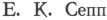
）的著作里，可以找到这个问题的最充分的和极其独创的说明；谢普的见解是和达尔文的见解互相呼应的，而且在很多方面证实了后者正确无误。谢普证明说，“大脑皮质的机能的各种不同的性质，是和它的外部行动相符合的”，并且有无数对于病人的观察结果都证实这一点。根据谢普的意见，决定某种面部表情的表情肌的收缩动作，对脑子的血液循环发生影响；这是由于面部血管和脑子血管之间具有直接联系的缘故。谢普用这个观点去分析了像皱眉、微笑、哭泣、声笑这一类表情动作，此后就去说明达尔文亲自所研究过的很多特有的表情动作的生物学意义和生理机制，因此也补充和加深了达尔文的研究工作。虽然谢普的结论也带有一部分机械论色彩，但是它们整个说来是重要的；现在我们就把这些结论举出如下：“脑子的皮质具有两个被调节的补给部分，就是分布开来的动脉网和静脉系统；这些部分的状态的各种不同的配合，就提供出智力工作的各种各样的一般条件。①正常状态下的分配网。由于眉毛上举而引起静脉的血压降低。结果就是联想过程的均匀的工作，亦即各种现存印迹（engram）的配合的再现工作。②在分配网里，血液向那些发生机能活动的区域集中工作加强，大量血液向内颈动脉普遍传送。由于眼球静脉的向外的出路被三棱肌夹紧，静脉的血压略微提高，因此动脉强度也提高起来。脑子和双眼里的血压增加，同时引起双眉皱缩。这种状况就促进新的印迹更加牢固而且明确地形成起来，去解决新的任务，建立新的配合，因为最后这些发生机能活动的区域终于获得充分的补给。③分配网补给量低落下去，使抵抗力减小，而外颈动脉网的补给量也低落下去，而且为了使头部内外双方血管网之间的血压相等起见，面部、头顶和颈背的静脉就被夹紧。脉搏增强，但是不发生强烈冲动，也不引起脑子的弹性机构的强烈反响。在面部和脑子部分，发生更加活跃的血液循环，同时氧的补给增多，但是流进组织里去的液体则略微比流出来的液体增多。达到微笑的状态。这时候，补给的集中程度降低，脑子的皮质里的偶然联系容易建立起来。④在上述的状态下，也发生内颈静脉里的血压降低，还有这种血压的波状振动。微血管的血液循环更加迅速，因此氧的补给量也更加多。脑子通过静脉系统而受到波动性按摩，发生声笑。⑤全部分配网收缩；静脉血液大量流到外静脉里去。微血管里的血液流动速度减低。氧的补给量减少，发生不满情绪，同时有简单的皱眉。⑥内颈静脉里的血压由于胸腔里的压力增加而也增高起来，因此使这些现象变得复杂起来；这些增高情形由于静脉血液从头部抽走的短暂冲动而发生中断。氧的补给量更加减少下去。一切过程减慢。哭泣的联合缺乏。⑦大哭和大笑，由于静脉血压所发生的急剧振动而打乱了脑子的机能活动”。（谢普：《神经病的临床分析》，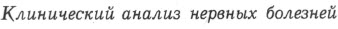
，1927，第98—100页）。［96］如果一个人由于自己犯有不良的道德上的举动而感到羞惭，那么他当时所发生的遮掩自己面部的欲望是一种复杂的现象，因此把这种现象生物学化的办法是不正确的。达尔文发现了一个对这种现象方面的初看起来好像可信的解释，但是未必可以把这个解释推广应用到“道德上的羞惭”的情形方面。如果要去说明这里所谈到的现象，那么就必须去考虑到教育和社会礼节的因素；大家知道，在不同的历史发展时期里，教育和社会礼节就有重大的变化。也很可能用下面的情形来说明在强烈的羞惭时候首先遮掩面部的倾向，就是：一个人用面部掉转和双眼低降的动作来避免暴露自己的心情，而这种欲望往往和羞惭结合起来，但是有时也会把羞惭驱散。除此以外，还恐怕应该首先对面部在羞惭时候掉转的事实本身采取郑重的批判态度，不应该认为它是已经根据达尔文的这本书里所举出的那些比较不多的、片面的资料而完全被证明了。
［97］在这一章里，达尔文分析了几种极其相似的精神状态；有时也用某一个名词去表明这些精神状态，但是它们实际上彼此有性质上的细微差异。例如害羞和胆小就是这样的。根据达尔文在这里所感到兴趣的这些现象的意义，显然是专门在谈到害羞方面，因为胆小是以恐惧的要素作为前提的，而在达尔文所叙述到的例子里，只是极其有条件地可以谈到恐惧方面。达尔文在分析这个问题方面的功绩，就在于：他成功地发现了两类恐惧的几个特征之间的联系；一类是真正的恐惧，正由于发生了实际的危险或者想象的危险而被引起的，也由于出现了恐惧的特殊形态所特有的那种特别的害羞或者胆小的状态而被引起的；另一类则是对于舆论的恐惧，或者是害怕在周围的人们的面前丧失某一方面的信誉。
［98］在达尔文的时代，还不能够查明怎样“可以使思想对血液循环发生影响”这个问题；当时主要只是从机械论的立场，或者从唯心主义的立场，去解释全部这个问题。达尔文毫不害怕引用这个思想或者想象对身体的生活过程起有影响的观念，去说明很多有关表情动作和情绪状态的外表特征方面的现象。可是，同时达尔文一开头就偏爱去采取生理学分析方法；如果说他用这个方法没有成功地达到十分明白的地步，那么这个罪名应该归属于当时生理学的状况方面。只有到了现在，当我们有可能在巴甫洛夫生理学的卓越发现的背景前面去考察达尔文的见解时候，就可以看出，达尔文在自己的探索方面是多少接近于真实情况的。有了这些发现，这种成为思想对血液循环过程的影响的基础的生理机制，就变得明显起来；达尔文正是企图用这一点去论证自己的脸红理论。巴甫洛夫的学生贝可夫（ ），对这一类在不久以前还是属于精神对肉体所起的神秘影响的现象，进行了详细的分析工作；贝可夫采用条件反射的方法去做实验，就用这些无可责难的实验资料成功地对这些现象作了唯物主义的说明，并且解除了那一层包围住这些现象的神秘主义的蒙布（参看贝可夫：《大脑皮质和内部器官》，第二版，1947年）很有意味的是：早在达尔文以前，另一位卓越的自然科学家拉马克，当时曾经对这个问题发表了同样的见解，而且在他的《动物学的哲学》的第三部分里，用好几页的文字来叙述这些见解。也像达尔文一样，拉马克替自己所详细叙述的那些表明出思想和注意对身体的生活过程起有影响的事实，顽强地找寻生理学的说明。虽然他的说明也反映出他的思维在这些问题上具有明确的唯物主义倾向，但是它仍旧带有幼稚的性质，这一部分也是由于他偏信流体学说（
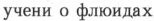
）而造成的。可是，虽然这样，不论达尔文或者拉马克，都是大部分可靠地预见到，应该使他们的见解在先进的唯物主义生理学的发展方面起有显著的作用。［99］达尔文在论断定向的注意对于器官和它的机能起有影响这一些文字里，引用了预想会对疾病发作的产生起有影响的说明；现在不能认为这种说明是使人满意的，因为预想状况本身反映出以前大脑皮质和一定反应的联系。因此，达尔文所叙述的现象，可以采用暂时联系或者条件反射的形成机制的观点来获得说明。
［100］现代科学拥有了大量事实，证明可能使任何一种感觉器官的灵敏度发生重大变化，特别是在专门训练的影响下可能发生这种情形［参看克拉夫可夫（ ）：《感觉器官的心理生理学》，莫斯科，1946年］。达尔文在这里引证了注意方向针对疼痛来源的条件下疼痛的感应性发生变化；这个事实是和这类现象的集体有关，但在这种情形下并不是谈到感觉器官和它们的机能活动力的固定变化方面，而是谈到它们的感应性限度向下方和向上方暂时偏移的情形。在这里，巴甫洛夫所定出的高级神经活动法则，再帮助我们去理解为什么集中注意，或者换句话说是大脑皮质里的一定的兴奋发源地的建立，会替感应性的变化创设条件（参看《巴甫洛夫全集》，第4卷，第111—112页；又第3卷，第196—197页）。
［101］在这些作出第13章的总结的结束语里，达尔文很明确地发展了关于血管反应的反射机制的见解。不但这样，他还表明出这些起初在相同的外来刺激物的影响下发生的血管反应（例如酸性果实和它对唾腺的影响的试验），能够逐渐去和其他的刺激物发生联系；这些后面的刺激物，正像我们现在一定会说到的，就是条件刺激物。因此，达尔文好像自身在自己的判断过程里，愈来愈精细琢磨了那个基本观念；这就是联合性习惯的观念；达尔文在开头分析情绪状态的外部表现的起源时候，就遵循着这个观念。从第13章的结束部分里，可以特别明显地看出，这个观念相当接近于条件反射理论。
［102］如果考虑到昆虫的身体组织水平和神经系统的构造，那么就可以知道，达尔文在这里所讲到的昆虫的感受的话，带有极度拟人观的色彩。
［103］我们在这里又遇见达尔文在本书里用来慷慨赠送的关于获得性可能遗传的观念的强调说法。我们可以注意到，这本书是在达尔文的科学创作的后期所写成的，因此有一种情况就显得极其重要，就是：达尔文在这方面表现成一位拥护获得性可能遗传的进步观念的人。可是，达尔文实际上仍旧没有说明基本问题，就是：究竟在哪些条件下和由于怎样的原因，个别的姿态或者怪相可以被传递给后代？应当指出，自从这本书出版以来，还没有人具体地精密研究过这个问题，所以它直到现在还是没有被解决。
［104］达尔文发表了很多关于讲话的起源、口语和姿态语方面的意见和关于发声机能的生物学意义方面的意见（参看《物种起源》，第3章）。这个问题只有到现在，就是在斯大林的天才著作《马克思主义与语言学问题》发表以后，才彻底弄明白。因此，可以特别着重指出，达尔文在提出姿态语的意义并且指出面部和身体的表情动作在加强和更良好地表现口语的意义时候，绝不是偏爱去认为姿态具有决定作用，也好像在走马看花时候所能觉得的情形一样，是一种人和人之间的交际手段。根据明显的原因，在这本研讨表情动作和情绪状态的外部表现的详细叙述的书里，达尔文认为，作为表情方法的姿态，要比说话具有更加重要的地位。就在这本书的前后文字里，也应该理解到达尔文关于面部和身体的表情动作帮助语的见解；这个见解，并不和斯大林关于这个问题而对别尔金和富列尔两同志的回答里所作的解释发生冲突。达尔文对于下面一点的指示是极其重要的；这一点就是：表情动作也像姿态一样，是表情的手段，并不具有最初特殊的目的，而且在这方面也不应该去和聋哑人的姿态作同等的看待。又可以去参看第22条 俄译者注。
［105］在这本书的叙述过程里，正像前面已经提出的情形一样，达尔文多次假定了那些具有目的论的印迹的定义。其实，本书的开头几页的叙述和他的观点和贝尔的观点彼此对抗的情形，正证明了达尔文对一切违反进化学说的说法和一切带有目的论世界观的印迹是根本敌对的。达尔文在这里坚决地卫护了自己的这个立场，对于他的见解的唯物主义方向性并没有丝毫的怀疑。
［106］残酷态度或者亲热态度和相应的表情动作的联合，的确就成为那些对于另一个人或者动物关于他们的表情动作的心情或者意图的辨认行动的基础。大家知道，人类在较早时候就获得这种辨认能力；很多动物也具有这种能力，而且也容易培养出这种能力来。它构成那种不是时常意识到的实际“观相术”的基础；我们在日常生活里最时常遵循这种观相术。条件反射原理最好不过地说明了这种辨认和理解别人的姿态和表情的能力。
［107］达尔文很清楚地指明，根据他亲自对于自己的孩子的观察和实验，这种理解面部表情、声调等的能力在怎样早的时候发生；可是，他同时不能明确地表达出外界条件的作用、教育和环境（在这个字的广义上说来）的影响。因此，达尔文关于辨认表情的天生感情就是很幼小的孩子就已经表现出来的感情这种说法，就显得极难使人相信。达尔文把两种绝不是同时发展起来的不同的机能——辨认机能和他所说的判断机能——混为一谈，不过他曾经对列莫因作了同样的责备。达尔文在和列莫因进行争论的时候，没有举出相当重大的论据来，因为实际上，到底怎样可以把这种正确而且迅速辨认不同表情的本领认为具有天生的和本能的（根据达尔文的用语）性质，这还是使人极其怀疑的。要是母亲对于自己的婴孩方面的一切举动和她的一切情绪，具有另一种外表性质，例如总是不变地随着亲热态度同时出现悲痛或者威吓的表情，或者相反地在发生后面两种表情时候接着出现亲热态度，那么也就未必可以去怀疑到婴孩辨认表情的本领具有另一种在和现有的正常状态比较说来是歪曲的性质。因此，达尔文关于辨认表情方面的一切判断，犯有两个错误，就是：第一是对辨认能力的天生性质作了不合逻辑的证明；第二是没有明确地把表情的辨认过程和它的判断过程区分开来。达尔文所细致地看出的事实本身，则确实仍旧具有科学资料的意义，它们对于面部表情的辨认能力的发展顺序的理解方面有极其重大的价值。
［108］达尔文是坚决拥护关于人种统一的观念的人；特别是他成功地利用了很多关于表情方面的事实，去证实这个原理。达尔文的资料击溃了“种族理论”的拥护者们的反动的、假科学的捏造。
［109］应该承认达尔文关于皱眉与其他表情动作是和身体的直立行走有联系这个意见，是极其细致而且独创的。可惜，达尔文只是顺便发表了这个思想，却没有对它作详细的讨论。辩证唯物主义的创立者们就表明出这个因素在人类与他的意识的发展方面具有多么重大的意义。在斯大林的著作里，我们可以阅读到关于这个问题的最宝贵的见解（参看《斯大林全集》，第1卷，《无政府主义还是社会主义》，第313—314页，中译本第288—289页）。根据这些见解，应该用新的、大有效果的观念去充实这一门关于表情动作的起源和演化的科学。